if (!require("pacman")) install.packages("pacman")
pacman::p_load(
stars, # spatiotemporal data handling
raster, # raster data handling
terra, # raster data handling
tidyterra, # for tidyverse like operations on terra objects
sf, # vector data handling
dplyr, # data wrangling
stringr, # string manipulation
lubridate, # dates handling
data.table, # data wrangling
patchwork, # arranging figures
tigris, # county border
colorspace, # color scale
viridis, # arranging figures
tidyr, # reshape
ggspatial, # north arrow and scale bar
ggplot2, # make maps
ggmapinset # make inset maps
)7 Creating Maps using ggplot2
Before you start
In previous chapters, we explored how to quickly create simple maps using vector and raster data. This section will focus on using ggplot2 to produce high-quality maps suitable for publication in journal articles, conference presentations, and professional reports. Achieving this level of quality requires refining the map’s aesthetics beyond default settings. This includes choosing appropriate color schemes, removing extraneous elements, and formatting legends. The focus here is on creating static maps, not the interactive ones commonly found on the web.
Creating maps differs from creating non-spatial figures in some aspects, but the underlying principles and syntax in ggplot2 for both are quite similar. If you already have experience with ggplot2, you will find map-making intuitive and straightforward, even if you have never used it for spatial data before. The primary difference lies in the choice of geom_*() functions. For spatial data visualization, several specialized geom_*() types are available.
-
ggplot2::geom_sf()forsf(vector) objects -
tidyterra::geom_spatraster()forSpatRaster(raster) objects -
stars::geom_stars()forstars(raster) objects1
1 see Chapter 6 for how stars package works
These geom_*() functions enable the visualization of both vector and raster data using the consistent and straightforward syntax of ggplot2. In the following sections, Section 7.1 and Section 7.2, we will explore each of the geom_*()s individually to understand their basic usage. You will also notice that the principles discussed in the subsequent sections are not specific to spatial data—they are general and applicable to any type of figure.
Finally, another great package for mapping is the tmap package (package website). It also follows the grammar of graphics like ggplot2, and those who are already familiar with ggplot2 will find it very intuitive to use. Given that the package website and Chapter 9 of Geocomputation with R already have great treatments of how to create maps with the package. This book does not cover this topic.
Another excellent package for mapping is the tmap package (package website). Like ggplot2, it follows the grammar of graphics, making it intuitive for users familiar with ggplot2. Since the package website and Chapter 9 of Geocomputation with R already provide excellent guides on creating maps with tmap, this book does not cover the topic.
Direction for replication
Datasets
All the datasets that you need to import are available here. In this chapter, file paths are set relative to my working directory (which is not shown). To run the code without having to adjust the file paths, follow these steps:
- set a folder (any folder) as the working directory using
setwd() - create a folder called “Data” inside the folder designated as the working directory (if you have created a “Data” folder previously, skip this step)
- download the pertinent datasets from here
- place all the files in the downloaded folder in the “Data” folder
Packages
- Run the following code to install or load (if already installed) the
pacmanpackage, and then install or load (if already installed) the listed package inside thepacman::p_load()function.
7.1 Creating maps from sf objects
This section explains how to create maps from vector data stored as an sf object via geom_sf().
7.1.1 Datasets
The following datasets will be used for illustrations.
Points
-
well_id: well ID -
af_used: total annual groundwater pumping at individual irrigation wells
#--- read in the KS wells data ---#
(
gw_KS_sf <- readRDS("Data/gw_KS_sf.rds")
)Simple feature collection with 56225 features and 3 fields
Geometry type: POINT
Dimension: XY
Bounding box: xmin: -102.0495 ymin: 36.99561 xmax: -94.70746 ymax: 40.00191
Geodetic CRS: NAD83
First 10 features:
well_id year af_used geometry
1 1 2010 67.00000 POINT (-100.4423 37.52046)
2 1 2011 171.00000 POINT (-100.4423 37.52046)
3 3 2010 30.93438 POINT (-100.7118 39.91526)
4 3 2011 12.00000 POINT (-100.7118 39.91526)
5 7 2010 0.00000 POINT (-101.8995 38.78077)
6 7 2011 0.00000 POINT (-101.8995 38.78077)
7 11 2010 154.00000 POINT (-101.7114 39.55035)
8 11 2011 160.00000 POINT (-101.7114 39.55035)
9 12 2010 28.17239 POINT (-95.97031 39.16121)
10 12 2011 89.53479 POINT (-95.97031 39.16121)Polygons
-
COUNTYFP: county FIPs code -
NAME: county name
(
KS_county <-
tigris::counties(state = "Kansas", cb = TRUE, progress_bar = FALSE) %>%
sf::st_as_sf() %>%
sf::st_transform(st_crs(gw_KS_sf)) %>%
dplyr::select(COUNTYFP, NAME)
)Simple feature collection with 105 features and 2 fields
Geometry type: MULTIPOLYGON
Dimension: XY
Bounding box: xmin: -102.0517 ymin: 36.99302 xmax: -94.58841 ymax: 40.00316
Geodetic CRS: NAD83
First 10 features:
COUNTYFP NAME geometry
40 175 Seward MULTIPOLYGON (((-101.0681 3...
181 027 Clay MULTIPOLYGON (((-97.3707 39...
182 171 Scott MULTIPOLYGON (((-101.1284 3...
183 047 Edwards MULTIPOLYGON (((-99.56988 3...
373 147 Phillips MULTIPOLYGON (((-99.62821 3...
485 149 Pottawatomie MULTIPOLYGON (((-96.72774 3...
486 055 Finney MULTIPOLYGON (((-101.103 37...
487 167 Russell MULTIPOLYGON (((-99.04234 3...
488 135 Ness MULTIPOLYGON (((-100.2477 3...
489 093 Kearny MULTIPOLYGON (((-101.5419 3...Lines
KS_railroadsSimple feature collection with 5796 features and 3 fields
Geometry type: GEOMETRY
Dimension: XY
Bounding box: xmin: -102.0517 ymin: 36.99769 xmax: -94.58841 ymax: 40.06304
Geodetic CRS: NAD83
First 10 features:
LINEARID FULLNAME MTFCC
2124 11051038759 Bnsf RR R1011
2136 11051038771 Bnsf RR R1011
2141 11051038776 Bnsf RR R1011
2186 11051047374 Rock Island RR R1011
2240 11051048071 Burlington Northern Santa Fe RR R1011
2252 11051048083 Burlington Northern Santa Fe RR R1011
2256 11051048088 Burlington Northern Santa Fe RR R1011
2271 11051048170 Chicago Burlington and Quincy RR R1011
2272 11051048171 Chicago Burlington and Quincy RR R1011
2293 11051048193 Chicago Burlington and Quincy RR R1011
geometry
2124 LINESTRING (-94.58841 39.15...
2136 LINESTRING (-94.59017 39.11...
2141 LINESTRING (-94.58841 39.15...
2186 LINESTRING (-94.58893 39.11...
2240 LINESTRING (-94.58841 39.15...
2252 LINESTRING (-94.59017 39.11...
2256 LINESTRING (-94.58841 39.15...
2271 LINESTRING (-94.58862 39.15...
2272 LINESTRING (-94.58883 39.11...
2293 LINESTRING (-94.58871 39.11...
7.1.2 Basic usage of geom_sf()
geom_sf() enables the visualization of sf objects. It automatically detects the geometry type of spatial data stored in sf and renders maps accordingly. For example, the following code generates maps for Kansas wells (points), Kansas counties (polygons), and Kansas railroads (lines):
(
g_wells <-
ggplot(data = gw_KS_sf) +
geom_sf()
)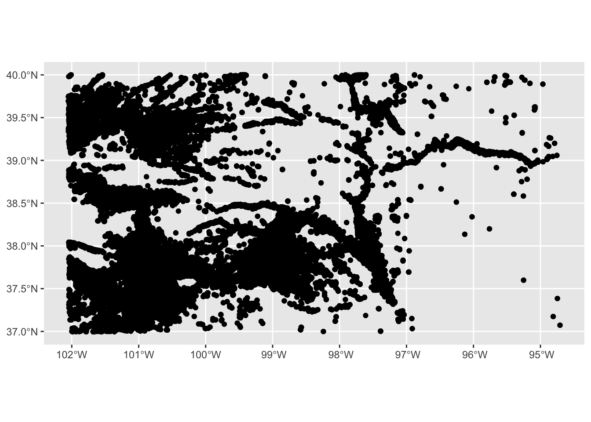
(
g_county <-
ggplot(data = KS_county) +
geom_sf()
)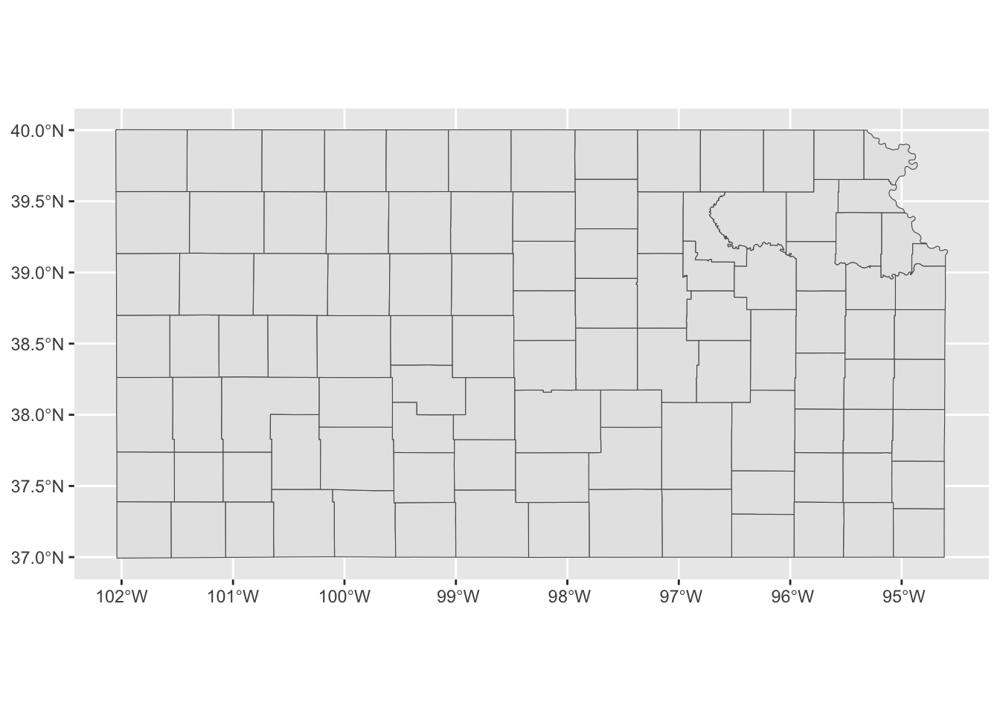
(
g_rail <-
ggplot(data = KS_railroads) +
geom_sf()
)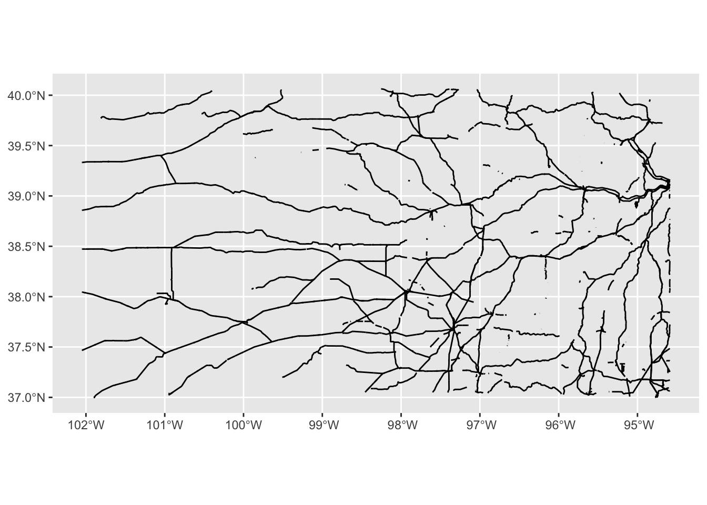
As demonstrated, different geometry types—such as points, polygons, and lines—are handled seamlessly by a single geom function, geom_sf(). Additionally, note that in the example code, neither the x-axis (longitude) nor the y-axis (latitude) needs to be explicitly specified. When creating a map, longitude and latitude are automatically assigned to the x- and y-axes, respectively. geom_sf() intelligently detects the geometry type and renders spatial objects accordingly.
7.1.3 Specifying the aesthetics
There are various aesthetics options you can use. Available aesthetics vary by the type of geometry. This section shows the basics of how to specify the aesthetics of maps. Finer control of aesthetics will be discussed later.
7.1.3.1 Points
- color: color of the points
- fill: available for some shapes (but likely useless)
- shape: shape of the points
- size: size of the points (rarely useful)
For illustration here, let’s focus on the wells in one county so it is easy to detect the differences across various aesthetics configurations.
example 1
-
color: dependent on
af_used(the amount of groundwater extraction) - size: constant across the points (bigger than default)
(
ggplot(data = gw_Stevens) +
geom_sf(aes(color = af_used), size = 2)
)
example 2
- color: constant across the points (blue)
-
size: dependent on
af_used - shape: constant across the points (square)
(
ggplot(data = gw_Stevens) +
geom_sf(aes(size = af_used), color = "blue", shape = 15)
)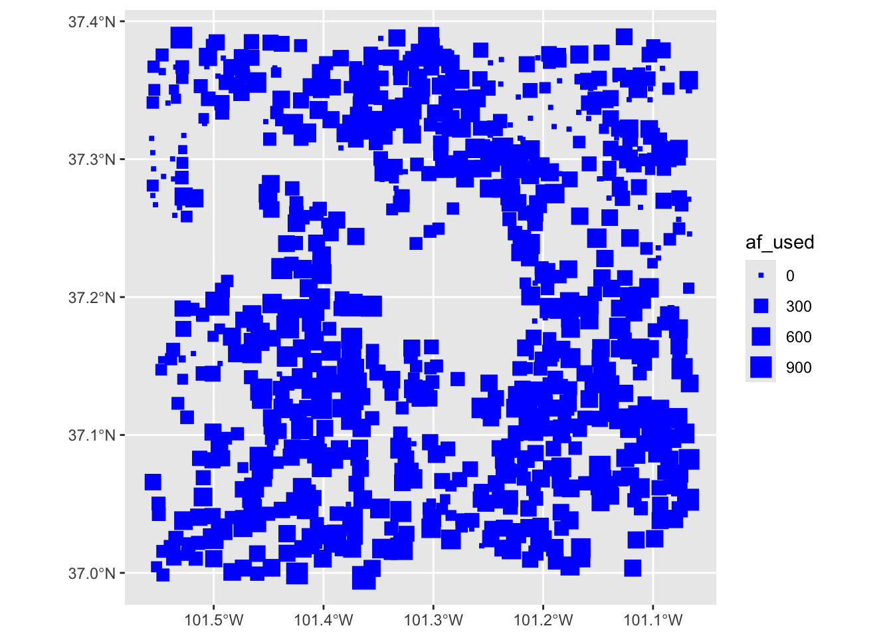
example 3
- color: dependent on whether located east of west of -101.3 in longitude
- shape: dependent on whether located east of west of -101.3 in longitude

7.1.3.2 Polygons
- color: color of the borders of the polygons
- fill: color of the inside of the polygons
- shape: not available
- size: not available
example 1
- color: constant (red)
- fill: constant (dark green)
ggplot(data = KS_county) +
geom_sf(color = "red", fill = "darkgreen")
example 2
- color: default (black)
- fill: dependent on the total amount of pumping in 2010
7.1.4 Plotting multiple spatial objects in one figure
You can combine all the layers created by geom_sf() additively so they appear in a single map:
ggplot() +
#--- this one uses KS_wells ---#
geom_sf(data = gw_KS_sf, size = 0.4) +
#--- this one uses KS_county ---#
geom_sf(data = KS_county) +
#--- this one uses KS_railroads ---#
geom_sf(data = KS_railroads, color = "red")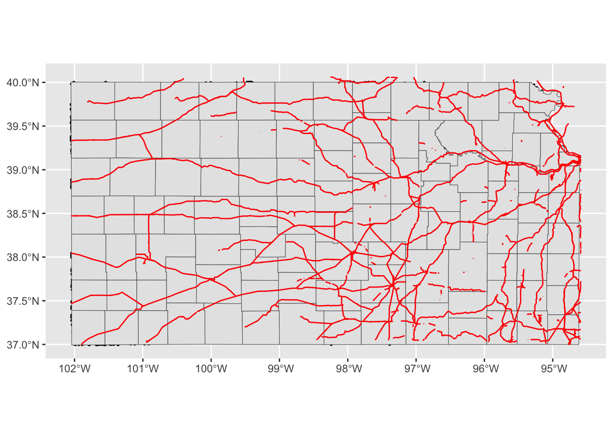
Oops, you cannot see wells (points) in the figure. The order of geom_sf() matters. The layer added later will come on top of the preceding layers. That’s why wells are hidden beneath Kansas counties. So, let’s do this:
ggplot(data = KS_county) +
#--- this one uses KS_county ---#
geom_sf() +
#--- this one uses KS_county ---#
geom_sf(data = gw_KS_sf, size = 0.4) +
#--- this one uses KS_railroads ---#
geom_sf(data = KS_railroads, color = "red")
Better.
Note that since you are using different datasets for each layer, you need to specify the dataset to use in each layer except for the first geom_sf() which inherits data = KS_wells from ggplot(data = KS_wells). Of course, this will create exactly the same map:
(
g_all <-
ggplot() +
#--- this one uses KS_county ---#
geom_sf(data = KS_county) +
#--- this one uses KS_wells ---#
geom_sf(data = gw_KS_sf, size = 0.4) +
#--- this one uses KS_railroads ---#
geom_sf(data = KS_railroads, color = "red")
)
There is no rule that you need to supply data to ggplot().2
2 Supplying data in ggplot() can be convenient if you are creating multiple geom from the data because you do not need to tell what data to use in each of the subsequent geoms.
Alternatively, you could add fill = NA to geom_sf(data = KS_county) instead of switching the order.
ggplot() +
#--- this one uses KS_wells ---#
geom_sf(data = gw_KS_sf, size = 0.4) +
#--- this one uses KS_county ---#
geom_sf(data = KS_county, fill = NA) +
#--- this one uses KS_railroads ---#
geom_sf(data = KS_railroads, color = "red")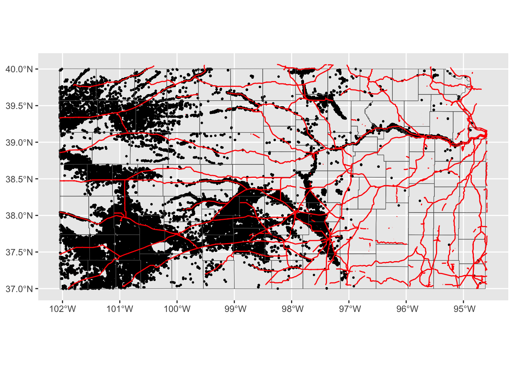
This is fine as long as you do not intend to color-code counties.
7.1.5 CRS
ggplot() uses the CRS of the sf to draw a map. For example, right now the CRS of KS_county is this:
sf::st_crs(KS_county)Coordinate Reference System:
User input: EPSG:4269
wkt:
GEOGCS["NAD83",
DATUM["North_American_Datum_1983",
SPHEROID["GRS 1980",6378137,298.257222101,
AUTHORITY["EPSG","7019"]],
TOWGS84[0,0,0,0,0,0,0],
AUTHORITY["EPSG","6269"]],
PRIMEM["Greenwich",0,
AUTHORITY["EPSG","8901"]],
UNIT["degree",0.0174532925199433,
AUTHORITY["EPSG","9122"]],
AUTHORITY["EPSG","4269"]]Let’s convert the CRS to WGS 84/ UTM zone 14N (EPSG code: 32614), make a map, and compare the ones with different CRS side by side.
g_32614 <-
sf::st_transform(KS_county, 32614) %>%
ggplot(data = .) +
geom_sf()g_county / g_32614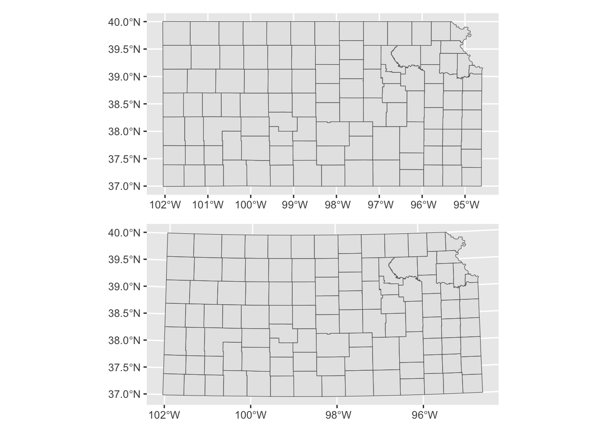
Alternatively, you could use coord_sf() to alter the CRS on the map, but not the CRS of the sf object itself.
ggplot() +
#--- epsg: 4269 ---#
geom_sf(data = KS_county) +
coord_sf(crs = 32614)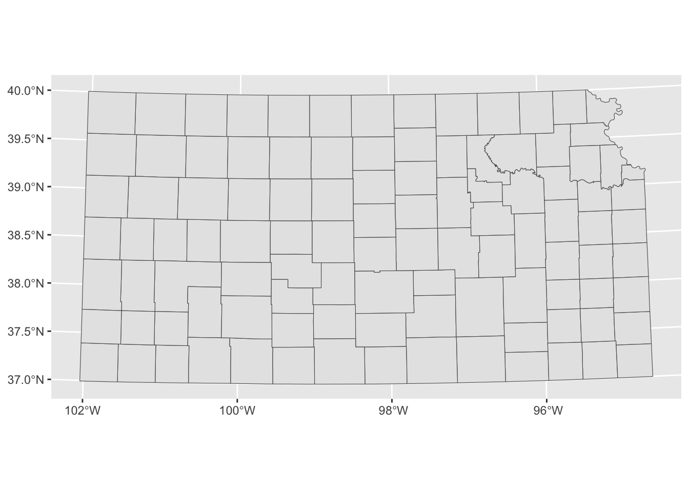
When multiple layers are used for map creation, the CRS of the first layer is applied for all the layers.
ggplot() +
#--- epsg: 32614 ---#
geom_sf(data = sf::st_transform(KS_county, 32614)) +
#--- epsg: 4269 ---#
geom_sf(data = KS_railroads)
coord_sf() applies to all the layers.
ggplot() +
#--- epsg: 32614 ---#
geom_sf(data = sf::st_transform(KS_county, 32614)) +
#--- epsg: 4269 ---#
geom_sf(data = KS_railroads) +
#--- using 4269 ---#
coord_sf(crs = 4269)
Finally, you could limit the geographic scope of the map to be created by adding xlim() and ylim().
ggplot() +
#--- epsg: 32614 ---#
geom_sf(data = sf::st_transform(KS_county, 32614)) +
#--- epsg: 4269 ---#
geom_sf(data = KS_railroads) +
#--- using 4269 ---#
coord_sf(crs = 4269) +
#--- limit the geographic scope of the map ---#
xlim(-99, -97) +
ylim(37, 39)
7.1.6 Faceting
Faceting splits the data into groups and generates a figure for each group, where the aesthetics of the figures are consistent across the groups. Faceting can be done using facet_wrap() or facet_grid(). Let’s try to create a map of groundwater use at wells by year where the points are color differentiated by the amount of groundwater use (af_used).
ggplot() +
#--- KS county boundary ---#
geom_sf(data = sf::st_transform(KS_county, 32614)) +
#--- wells ---#
geom_sf(data = gw_KS_sf, aes(color = af_used)) +
#--- facet by year (side by side) ---#
facet_wrap(. ~ year)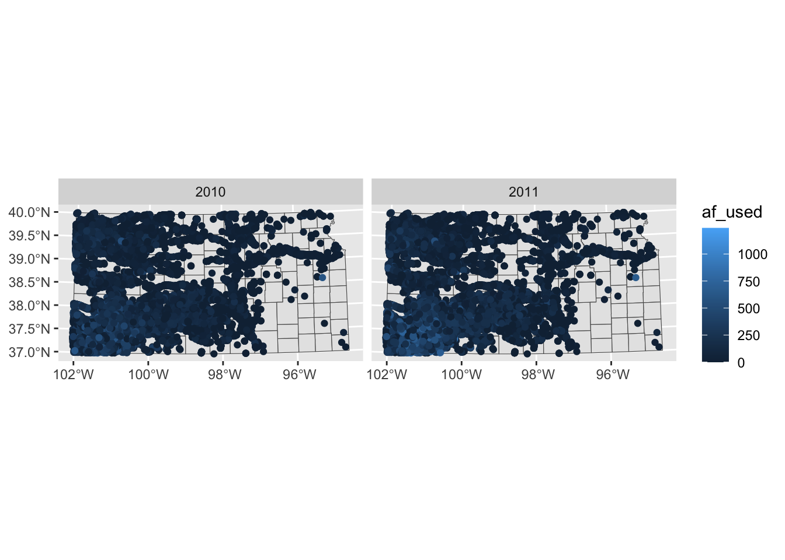
Note that the above code creates a single legend that applies to both panels, which allows you to compare values across panels (years here). Further, also note that the values of the faceting variable (year) are displayed in the gray strips above the maps. You can have panels stacked vertically by using the ncol option (or nrow also works) in facet_wrap(. ~ year) as follows:
ggplot() +
#--- KS county boundary ---#
geom_sf(data = sf::st_transform(KS_county, 32614)) +
#--- wells ---#
geom_sf(data = gw_KS_sf, aes(color = af_used)) +
#--- facet by year (side by side) ---#
facet_wrap(. ~ year, ncol = 1)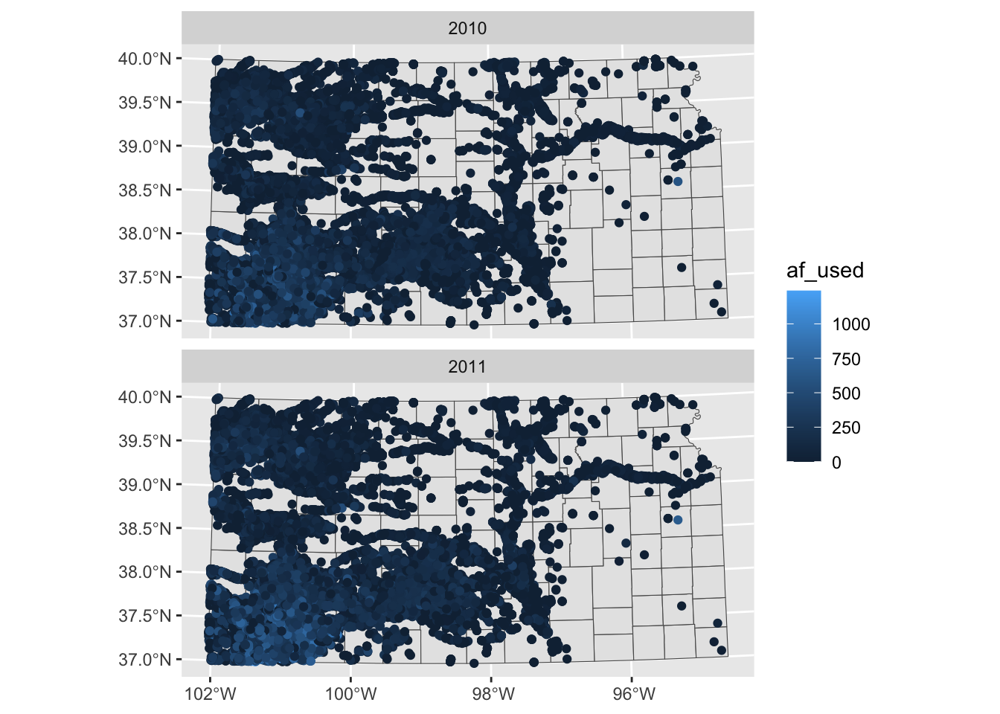
Two-way faceting is possible by supplying a variable name (or expression) in place of . in facet_wrap(. ~ year). The code below uses an expression (af_used > 200) in place of .. This divides the dataset by whether water use is greater than 200 or not and by year.
ggplot() +
#--- KS county boundary ---#
geom_sf(data = sf::st_transform(KS_county, 32614)) +
#--- wells ---#
geom_sf(data = gw_KS_sf, aes(color = af_used)) +
#--- facet by year (side by side) ---#
facet_wrap((af_used > 200) ~ year)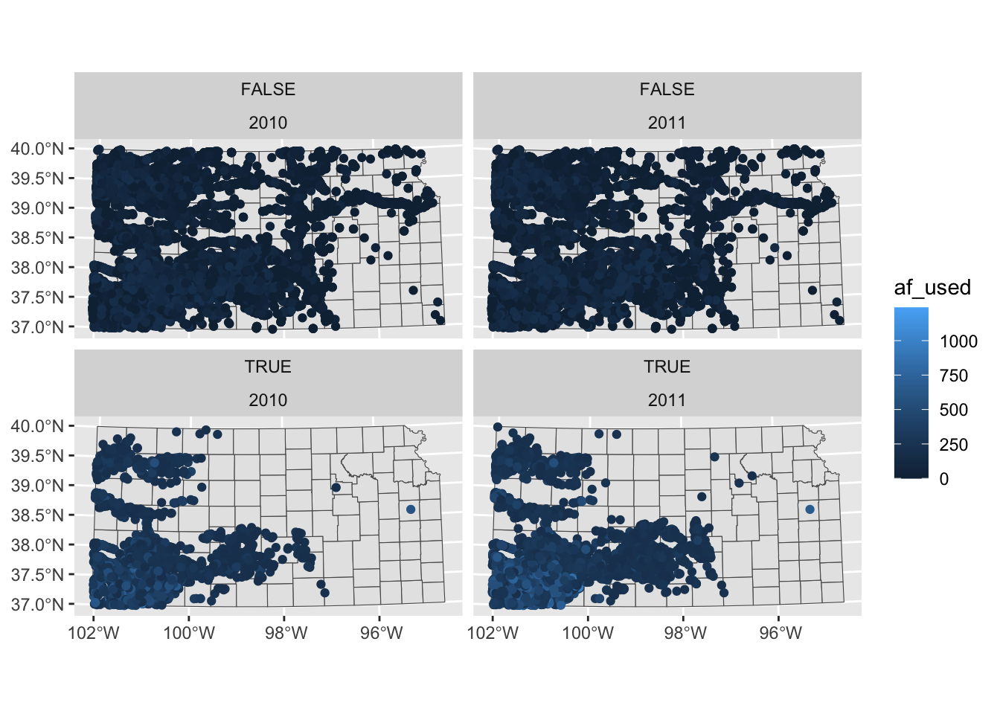
The values of the expression (TRUE or FALSE) appear in the gray strips, which is not informative. We will discuss in detail how to control texts in the strips Section 7.6.
If you feel like the panels are too close to each other, you could provide more space between them using panel.spacing (both vertically and horizontally), panel.spacing.x (horizontally), and panel.spacing.y (vertically) options in theme(). Suppose you would like to place more space between the upper and lower panels, then you use panel.spacing.y like this:
ggplot() +
#--- KS county boundary ---#
geom_sf(data = sf::st_transform(KS_county, 32614)) +
#--- wells ---#
geom_sf(data = gw_KS_sf, aes(color = af_used)) +
#--- facet by year (side by side) ---#
facet_wrap((af_used > 200) ~ year) +
#--- add more space between panels ---#
theme(panel.spacing.y = unit(2, "lines"))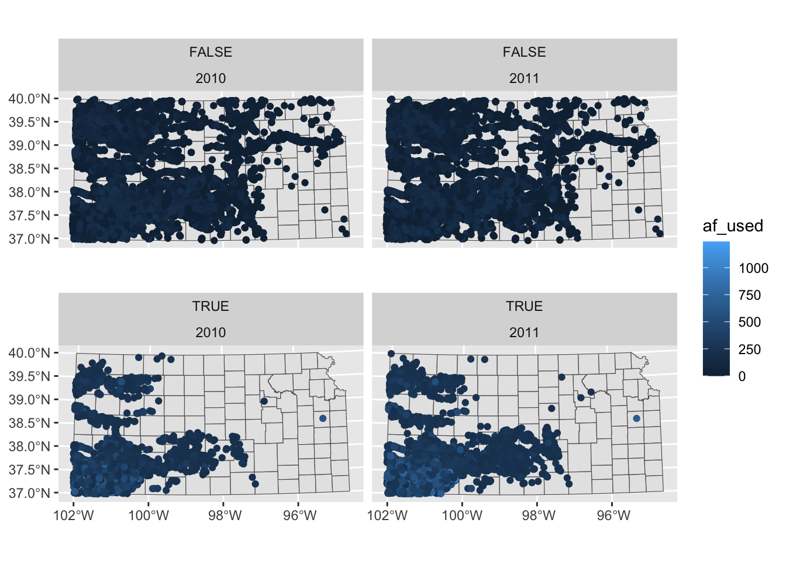
7.1.7 Adding texts (labels) on a map
You can add labels to a map using geom_sf_text() or geom_sf_label() from the ggplot2 pacakge, specifying aes(label = x) where x is the variable containing the labels to be displayed on the map.
ggplot() +
#--- KS county boundary ---#
geom_sf(data = KS_county) +
geom_sf_text(
data = KS_county,
aes(label = NAME),
size = 3,
color = "blue"
)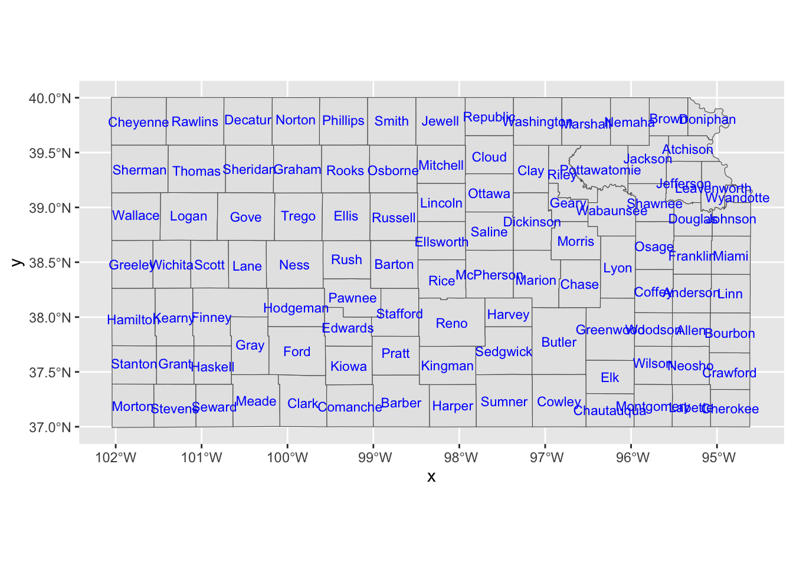
If you would like to have overlapping labels not printed, you can add check_overlap = TRUE.
ggplot() +
#--- KS county boundary ---#
geom_sf(data = KS_county) +
geom_sf_text(
data = KS_county,
aes(label = NAME),
check_overlap = TRUE,
size = 3,
color = "blue"
)
The nudge_x and nudge_y options let you shift the labels.
ggplot() +
#--- KS county boundary ---#
geom_sf(data = KS_county) +
geom_sf_text(
data = KS_county,
aes(label = NAME),
check_overlap = TRUE,
size = 3,
color = "blue",
nudge_x = -0.1,
nudge_y = 0.1
)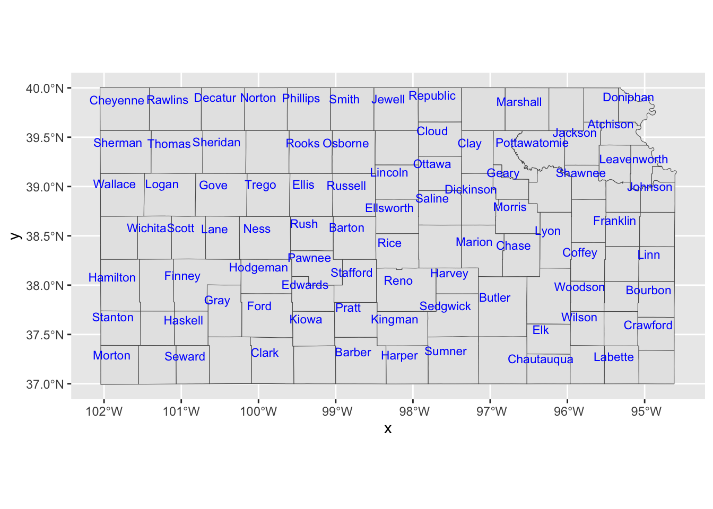
If you would like a fine control on a few objects, you can always work on them separately.
ggplot() +
#--- KS county boundary ---#
geom_sf(data = KS_county) +
geom_sf_text(
data = KS_less_Cheyenne,
aes(label = NAME),
check_overlap = TRUE,
size = 3,
color = "blue",
nudge_x = -0.1,
nudge_y = 0.1
) +
geom_sf_text(
data = Cheyenne,
aes(label = NAME),
size = 2.5,
color = "red",
nudge_y = 0.2
)
You could also use annotate() to place texts on a map, which can be useful if you would like to place arbitrary texts that are not part of sf object.
ggplot() +
#--- KS county boundary ---#
geom_sf(data = KS_county) +
geom_sf_text(
data = KS_less_Cheyenne,
aes(label = NAME),
check_overlap = TRUE,
size = 3,
color = "blue",
nudge_x = -0.1,
nudge_y = 0.1
) +
#--- use annotate to add texts on the map ---#
annotate(
geom = "text",
x = -102,
y = 39.8,
size = 3,
label = "Cheyennes",
color = "red"
)
As you can see, you need to tell where the texts should be placed with x and y, provide the texts you want on the map to label.
7.2 Raster data visualization: geom_spatraster() and geom_stars()
This section shows how to use tidyterra::geom_spatraster() and stars::geom_stars() to create maps from raster datasets of two object classes: SpatRaster from the terra package and stars objects from the stars package, respectively.
While ggplot2::geom_raster() can be used to create a map from raster, it requires a data.frame containing coordinates to generate maps, making it a two-step process.
- convert raster dataset into a
data.framewith coordinates - use
ggplot2::geom_raster()to make a map
On the other hand, geom_spatraster() and geom_stars() accepts a SpatRaster (from the terra package) and stars object (from the stars package), respectively, and no data transformation is necessary for either of them. For this reason, the use of geom_spatraster() or geom_stars is recommended over geom_raster().
7.2.1 Data Preparation
We use the following objects that have the same information but come in different object classes for illustration in this section.
Raster as stars
tmax_Jan_09 <- readRDS("Data/tmax_Jan_09_stars.rds")Raster as SpatRaster
7.2.2 Visualize with tidyterra::geom_spatraster()
Creating a map from a SpatRaster is as straightforward as creating one from an sf object. You can use tidyterra::geom_spatraster(), setting the data argument to your SpatRaster object.
ggplot() + geom_spatraster(data = tmax_Jan_09_sr)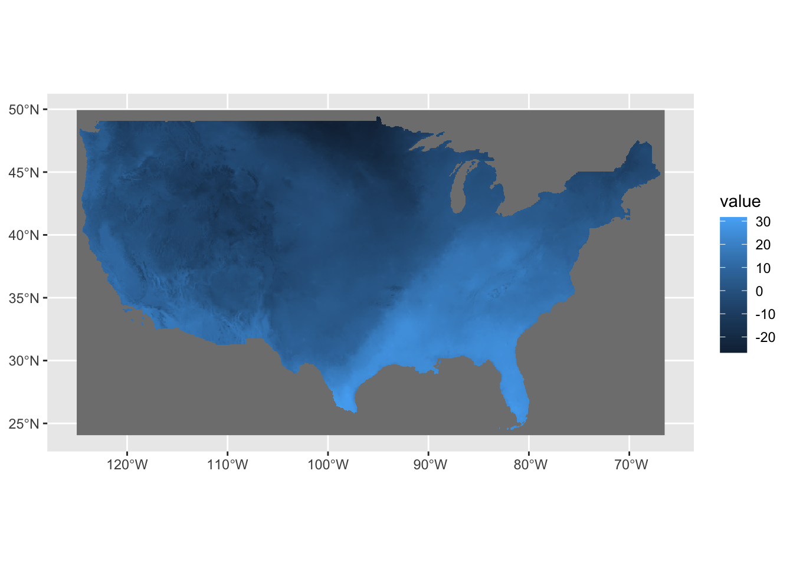
Notice here that the fill color was automatically set to cell values (here, tmax). tmax_Jan_09_sr is a five-layer raster object, and you might be wondering which of the five layers were used for the map above. The answer is: all of them. To select a specific layer, you can specify aes(fill = layer_name) within geom_spatraster(), as shown below:
ggplot() +
geom_spatraster(data = tmax_Jan_09_sr, aes(fill = `2009-01-01`))
To facet by layer, apply facet_wrap(~ lyr) as shown below.
ggplot() +
geom_spatraster(data = tmax_Jan_09_sr) +
facet_wrap(~ lyr, ncol = 2)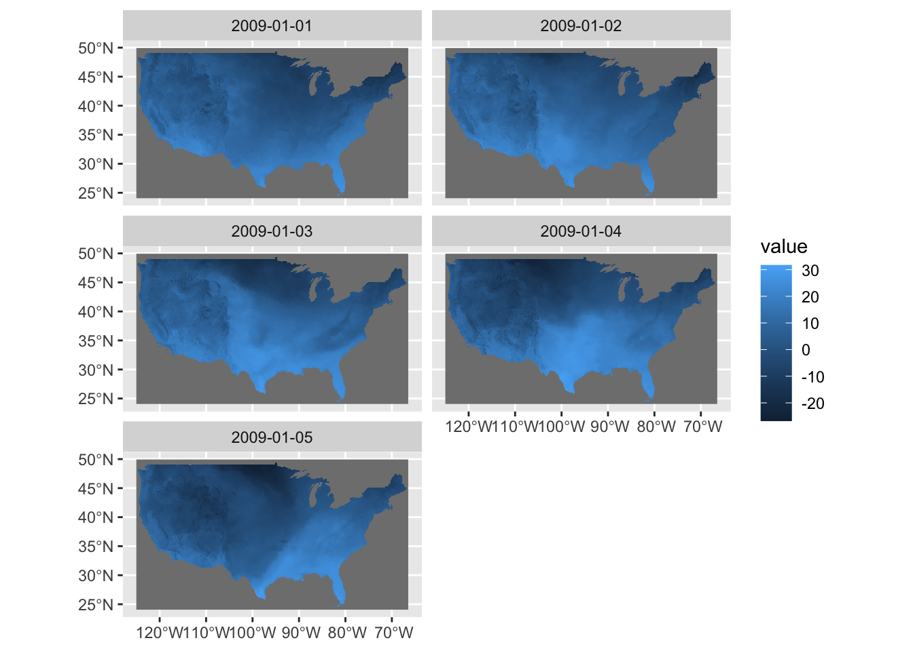
Since this is built within the ggplot2 framework, you can easily customize the figure if you are familiar with ggplot2.
ggplot() +
geom_spatraster(data = tmax_Jan_09_sr) +
facet_wrap(~ lyr, ncol = 2) +
scale_fill_whitebox_c(
palette = "muted",
labels = scales::label_number(suffix = "º"),
n.breaks = 20,
guide = guide_legend(reverse = TRUE)
) +
labs(fill = "")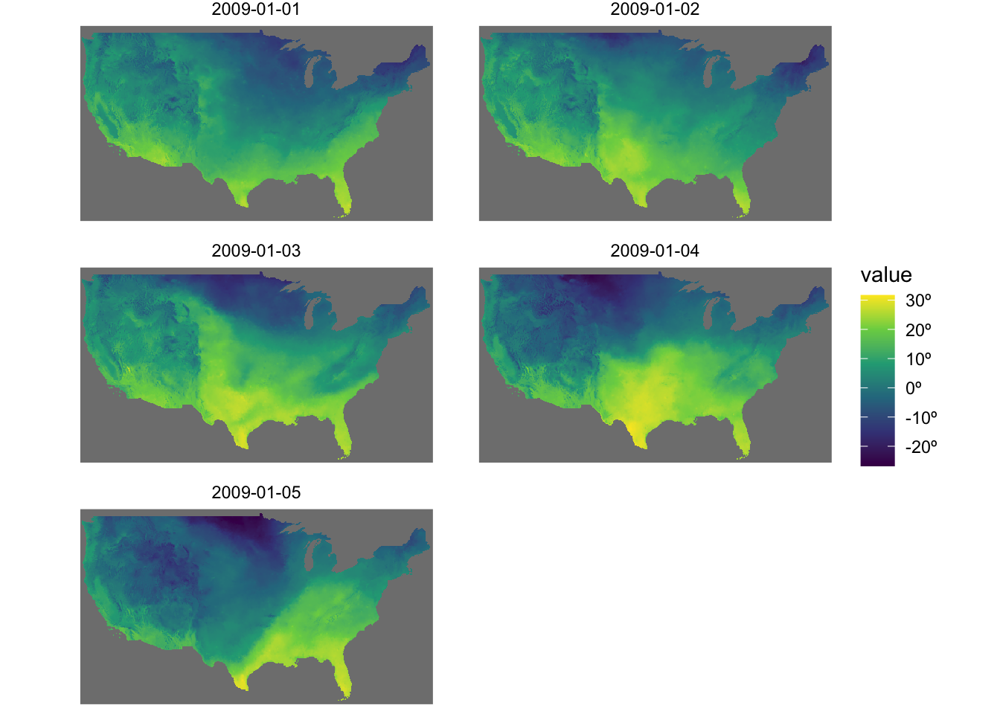
7.2.3 Visualize stars with geom_stars()
stars::geom_stars() allows you to directly use a stars object to easily create a map within the ggplot2 framework. It works similarly to geom_sf() and geom_spatraster()—simply provide the stars object as the data argument in geom_stars().
ggplot() +
geom_stars(data = tmax_Jan_09) +
theme_void()
The fill color of the raster cells are automatically set to the attribute (here tmax) as if aes(fill = tmax).
ggplot() +
geom_stars(data = tmax_Jan_09) +
theme_void()
By default, geom_stars() plots only the first band. In order to present all the layers at the same time, you can add facet_wrap( ~ x) where x is the name of the third dimension of the stars object (date here).
ggplot() +
geom_stars(data = tmax_Jan_09) +
facet_wrap(~ date) +
theme_void()
7.2.4 adding geom_sf() layers
You can easily add geom_sf() layers to a map created with geom_spatraster() and geom_stars(). Let’s crop the tmax data to Kansas and create a map of tmax values displayed on top of the Kansas county borders.
#--- crop to KS ---#
KS_tmax_Jan_09_stars <-
tmax_Jan_09 %>%
sf::st_crop(KS_county)
KS_tmax_Jan_09_sr <-
as(KS_tmax_Jan_09_stars, "SpatRaster")Mixing either geom_spatraster() or geom_stars() layers with geom_sf() layers is not any different from mixing different non-spatial geom_*()s under the ggplot2 framework. You can easily see in the example below that mixes geom_stars() and geom_sf() layers:
with geom_stars()
ggplot() +
geom_stars(data = KS_tmax_Jan_09_stars) +
geom_sf(data = KS_county, fill = NA) +
facet_wrap(~date) +
theme_void()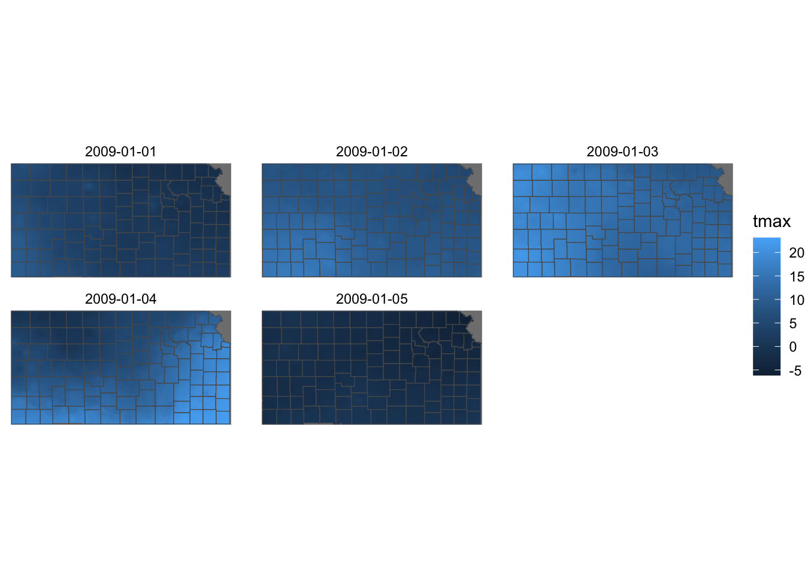
with geom_spatraster()
ggplot() +
geom_spatraster(data = KS_tmax_Jan_09_sr) +
geom_sf(data = KS_county, fill = NA) +
facet_wrap(~ lyr) +
theme_void()
One caveat with geom_stars() is that vector and raster datasets need to have the same GRS/CRS. The code below transform the CRS of KS_county from NAD83 GRS to WGS 84 / UTM zone 14N before plotting and see what happens.
ggplot() +
geom_stars(data = KS_tmax_Jan_09_stars) +
geom_sf(data = sf::st_transform(KS_county, 32614), fill = NA) +
facet_wrap(~date) +
theme_void()
This is not the case for geom_spatraster().
ggplot() +
geom_spatraster(data = KS_tmax_Jan_09_sr) +
geom_sf(data = sf::st_transform(KS_county, 32614), fill = NA) +
facet_wrap(~ lyr) +
theme_void()
7.3 Color scale
A color scale defines how variable values are mapped to colors in a figure. For example, in the illustration below, the color scale for fill maps the values of the cells to a gradient, with dark blue representing low values and light blue indicating high values of tmax.
g_col_scale <-
ggplot() +
geom_spatraster(data = tmax_Jan_09_sr) +
facet_wrap(~ lyr) +
theme_void() +
theme(
legend.position = "bottom"
)Often, it’s aesthetically desirable to customize the default color scale in ggplot2. For instance, when visualizing temperature values, you might prefer a gradient that ranges from blue for lower temperatures to red for higher ones.
You can control the color scale using scale_*() functions. The specific scale_*() function you need depends on the type of aesthetic (fill or color) and whether the variable is continuous or discrete. Using an incorrect scale_*() function will result in an error.
7.3.1 Viridis color maps
The ggplot2 package provides scale_A_viridis_B() functions for applying the Viridis color map, where A refers to the type of aesthetic attribute (fill, color), and B refers to the type of variable. For example, scale_fill_viridis_c() is used for fill aesthetics applied to a continuous variable.
The Viridis color map offers five different palettes, which can be selected using the option argument (Figure 7.1 is a visualization of all five palettes).
Code
data("geyser", package = "MASS")
ggplot(geyser, aes(x = duration, y = waiting)) +
xlim(0.5, 6) +
ylim(40, 110) +
stat_density2d(aes(fill = ..level..), geom = "polygon") +
theme_bw() +
theme(panel.grid = element_blank()) -> gg
(gg + scale_fill_viridis_c(option = "A") + labs(x = "magma", y = NULL)) /
(gg + scale_fill_viridis_c(option = "B") + labs(x = "inferno", y = NULL)) /
(gg + scale_fill_viridis_c(option = "C") + labs(x = "plasma", y = NULL)) /
(gg + scale_fill_viridis_c(option = "D") + labs(x = "viridis", y = NULL)) /
(gg + scale_fill_viridis_c(option = "E") + labs(x = "cividis", y = NULL))
Let’s see what the PRISM tmax maps look like using Option A and D (default). Since the aesthetics type is fill and tmax is continuous, scale_fill_viridis_c() is the appropriate one here.
g_col_scale + scale_fill_viridis_c(option = "A")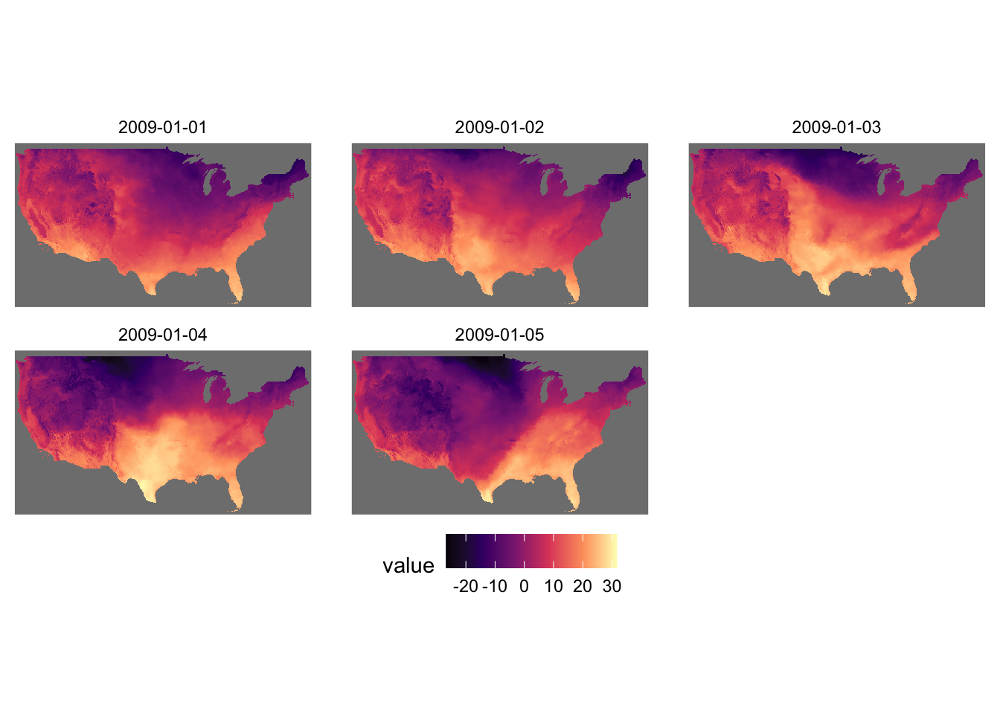
g_col_scale + scale_fill_viridis_c(option = "D")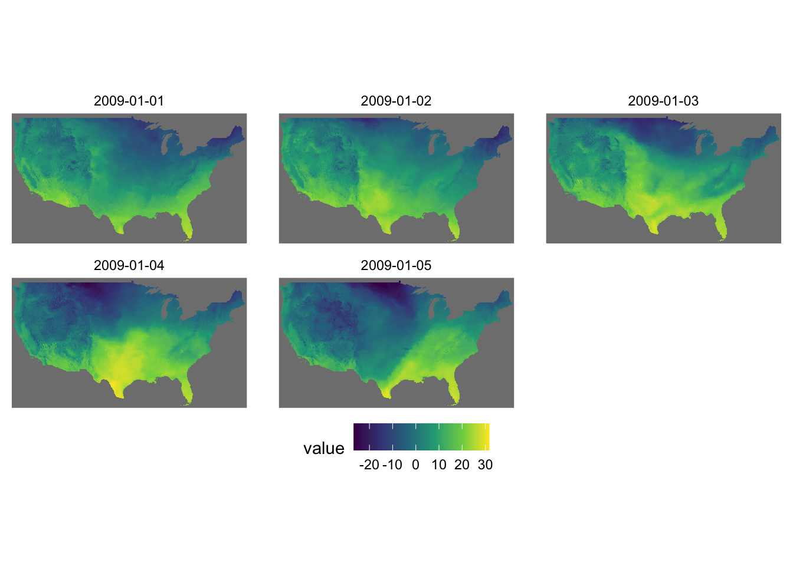
You can reverse the order of the color by adding direction = -1.
g_col_scale + scale_fill_viridis_c(option = "D", direction = -1)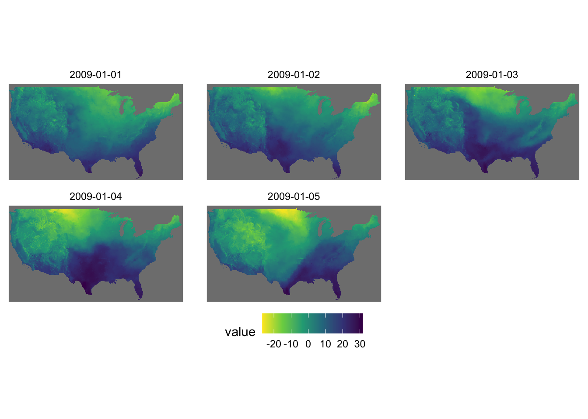
Let’s now work on aesthetics mapping based on a discrete variable. The code below groups af_used into five groups of ranges.
#--- convert af_used to a discrete variable ---#
gw_Stevens <- dplyr::mutate(gw_Stevens, af_used_cat = cut_number(af_used, n = 5))
#--- take a look ---#
head(gw_Stevens)Simple feature collection with 6 features and 4 fields
Geometry type: POINT
Dimension: XY
Bounding box: xmin: -101.4232 ymin: 37.04683 xmax: -101.1111 ymax: 37.29295
Geodetic CRS: NAD83
well_id year af_used geometry af_used_cat
197 234 2010 461.9565 POINT (-101.4232 37.1165) (377,508]
198 234 2011 486.0534 POINT (-101.4232 37.1165) (377,508]
247 290 2010 457.4391 POINT (-101.2301 37.29295) (377,508]
248 290 2011 580.4156 POINT (-101.2301 37.29295) (508,1.19e+03]
275 317 2010 258.0000 POINT (-101.1111 37.04683) (157,264]
276 317 2011 255.0000 POINT (-101.1111 37.04683) (157,264]Since we would like to control color aesthetics based on a discrete variable, we should be using scale_color_viridis_d().
ggplot(data = gw_Stevens) +
geom_sf(aes(color = af_used_cat), size = 2) +
scale_color_viridis_d(option = "C")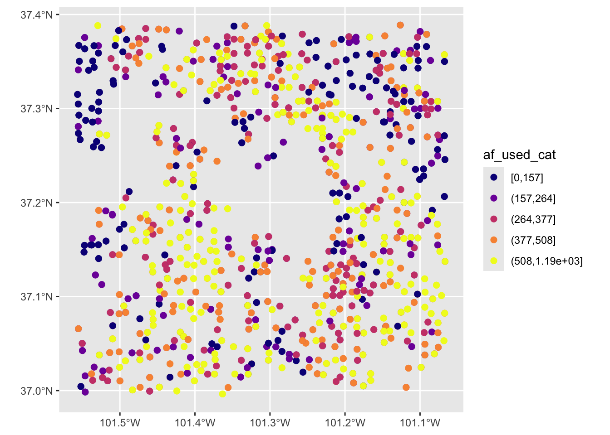
7.3.2 RColorBrewer: scale_*_distiller() and scale_*_brewer()
The RColorBrewer package provides a set of color scales that are useful. Here is the list of color scales you can use.
#--- load RColorBrewer ---#
library(RColorBrewer)
#--- disply all the color schemes from the package ---#
display.brewer.all()
The first set of color palettes are sequential palettes and are suitable for a variable that has ordinal meaning: temperature, precipitation, etc. The second set of palettes are qualitative palettes and suitable for qualitative or categorical data. Finally, the third set of palettes are diverging palettes and can be suitable for variables that take both negative and positive values like changes in groundwater level.
Two types of scale functions can be used to use these palettes:
-
scale_*_distiller()for a continuous variable -
scale_*_brewer()for a discrete variable
To use a specific color palette, you can simply add palette = "palette name" inside scale_fill_distiller(). The codes below applies “Spectral” as an example.
g_col_scale +
theme_void() +
scale_fill_distiller(palette = "Spectral")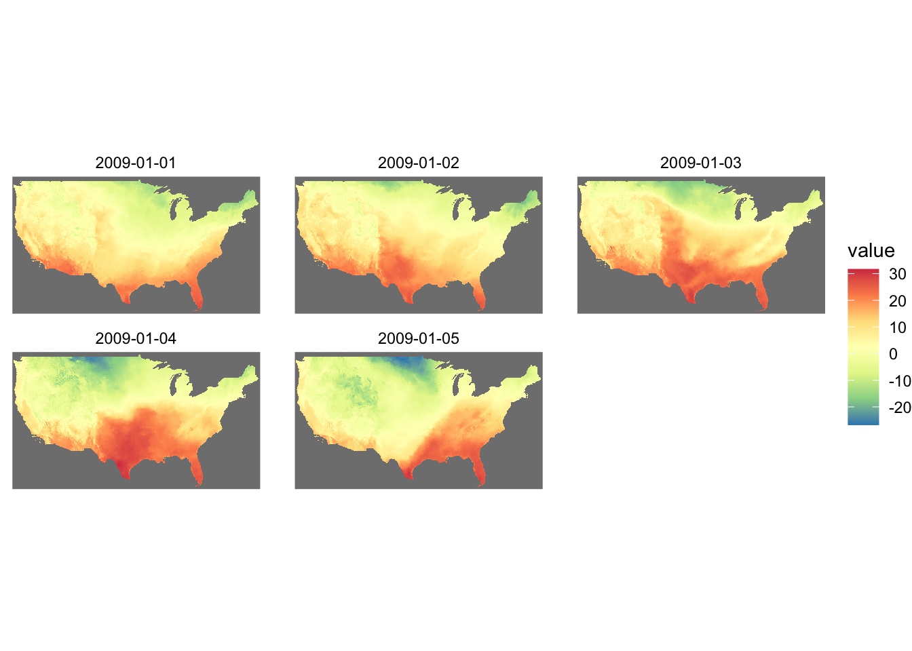
You can reverse the color order by adding trans = "reverse" option.
g_col_scale +
theme_void() +
scale_fill_distiller(palette = "Spectral", trans = "reverse")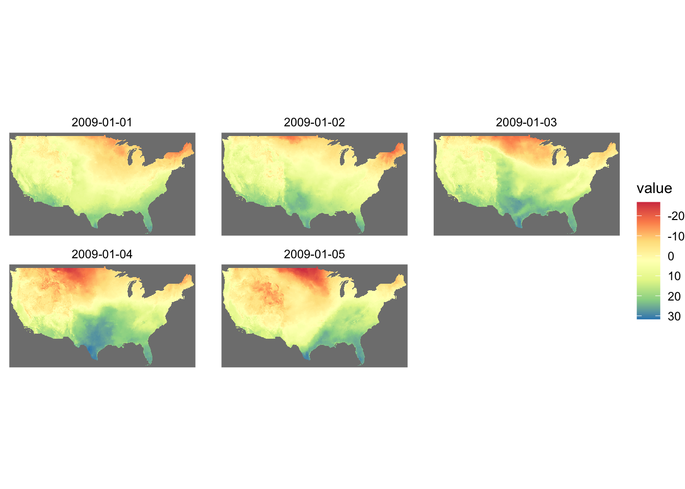
If you are specifying the color aesthetics based on a continuous variable, then you use scale_color_distiller().
ggplot(data = gw_Stevens) +
geom_sf(aes(color = af_used), size = 2) +
scale_color_distiller(palette = "Spectral")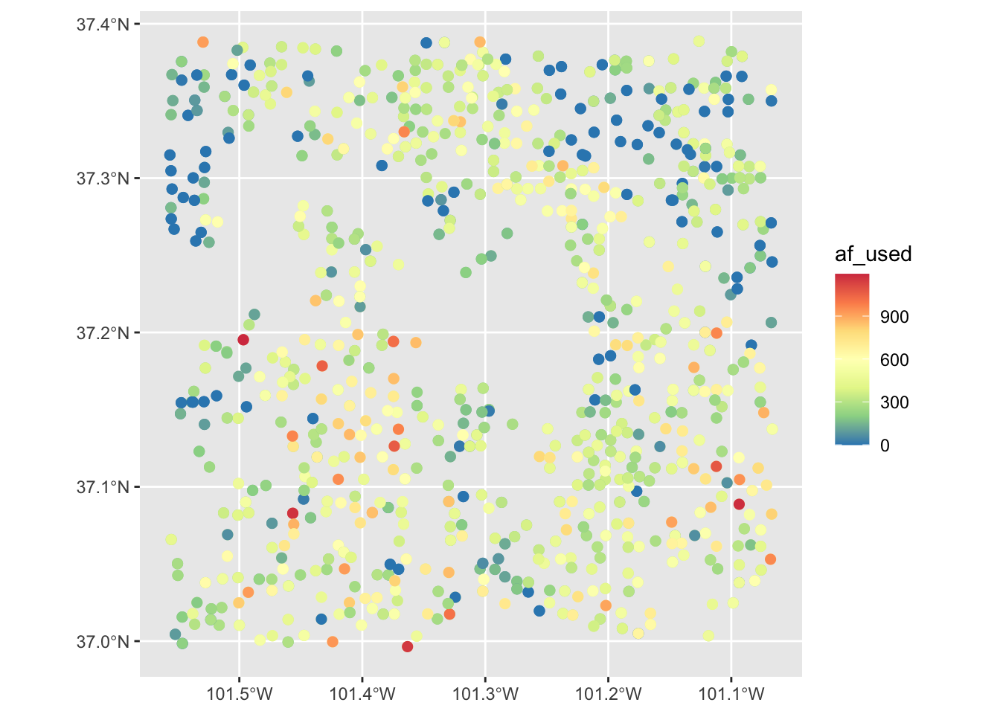
Now, suppose the variable of interest comes with categories of ranges of values. The code below groups af_used into five ranges using ggplo2::cut_number().
gw_Stevens <- dplyr::mutate(gw_Stevens, af_used_cat = cut_number(af_used, n = 5))Since af_used_cat is a discrete variable, you can use scale_color_brewer() instead.
ggplot(data = gw_Stevens) +
geom_sf(aes(color = af_used_cat), size = 2) +
scale_color_brewer(palette = "Spectral")
7.3.3 colorspace package
If you are not satisfied with the viridis color map or the ColorBrewer palette options, you might want to try the colorspace package.
Here is the palettes the colorspace package offers.
#--- plot the palettes ---#
colorspace::hcl_palettes(plot = TRUE)
The packages offers its own scale_*() functions that follows the following naming convention:
scale_aesthetic_datatype_colorscale where
- aesthetic:
fillorcolor - datatype:
continuousordiscrete - colorscale:
qualitative,sequential,diverging,divergingx
For example, to add a sequential color scale to the following map, we would use scale_fill_continuous_sequential() and then pick a palette from the set of sequential palettes shown above. The code below uses the Viridis palette with the reverse option:
ggplot() +
geom_sf(data = gw_by_county, aes(fill = af_used)) +
facet_wrap(. ~ year) +
scale_fill_continuous_sequential(palette = "Viridis", trans = "reverse")If you still cannot find a palette that satisfies your need (or obsession at this point), then you can easily make your own. The package offers hclwizard(), which starts shiny-based web application to let you design your own color palette.
After running this,
hclwizard()you should see a web application pop up that looks like this.
knitr::include_graphics("assets/hclwizard.png")
After you find a color scale you would like to use, you can go to the Exporttab, select the R tab, and then copy the code that appear in the highlighted area.
knitr::include_graphics("assets/hclwizard_pick_theme.png")
You could register the color palette by completing the register = option in the copied code if you think you will use it other times. Otherwise, you can delete the option.
col_palette <- colorspace::sequential_hcl(n = 7, h = c(36, 200), c = c(60, NA, 0), l = c(25, 95), power = c(0.7, 1.3))We then use the code as follows:
g_col_scale +
theme_void() +
scale_fill_gradientn(colors = col_palette)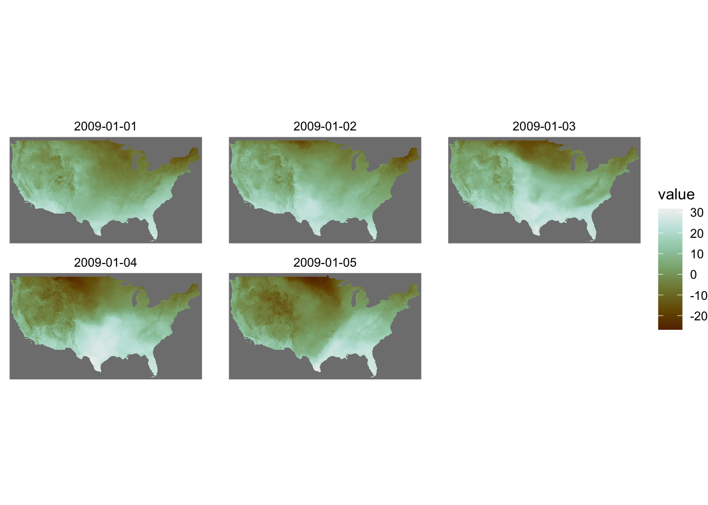
Note that you are now using scale_*_gradientn() with this approach.
For a discrete variable, you can use scale_*_manual():
col_discrete <- colorspace::sequential_hcl(n = 5, h = c(240, 130), c = c(30, NA, 33), l = c(25, 95), power = c(1, NA), rev = TRUE)
ggplot() +
geom_sf(data = gw_Stevens, aes(color = af_used_cat), size = 2) +
scale_color_manual(values = col_discrete)
7.4 Arranging maps
patchwork combines ggplot objects (maps) using simple operators: +, /, and |. Let’s first create maps of tmax and precipitation separately.
#--- tmax ---#
tmax_20000101 <- terra::rast("Data/PRISM/PRISM_tmax_stable_4kmD2_20000101_bil/PRISM_tmax_stable_4kmD2_20000101_bil.bil")
(
g_tmax <-
ggplot() +
geom_spatraster(data = tmax_20000101) +
scale_fill_viridis_c() +
theme_void() +
theme(legend.position = "bottom")
)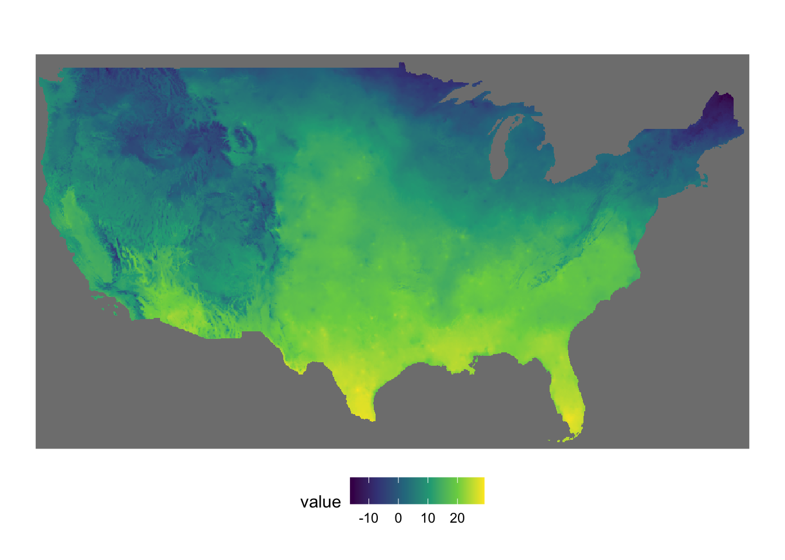
#--- ppt ---#
ppt_20000101 <- terra::rast("Data/PRISM/PRISM_ppt_stable_4kmD2_20000101_bil/PRISM_ppt_stable_4kmD2_20000101_bil.bil")
(
g_ppt <-
ggplot() +
geom_spatraster(data = ppt_20000101) +
scale_fill_viridis_c() +
theme_void() +
theme(legend.position = "bottom")
)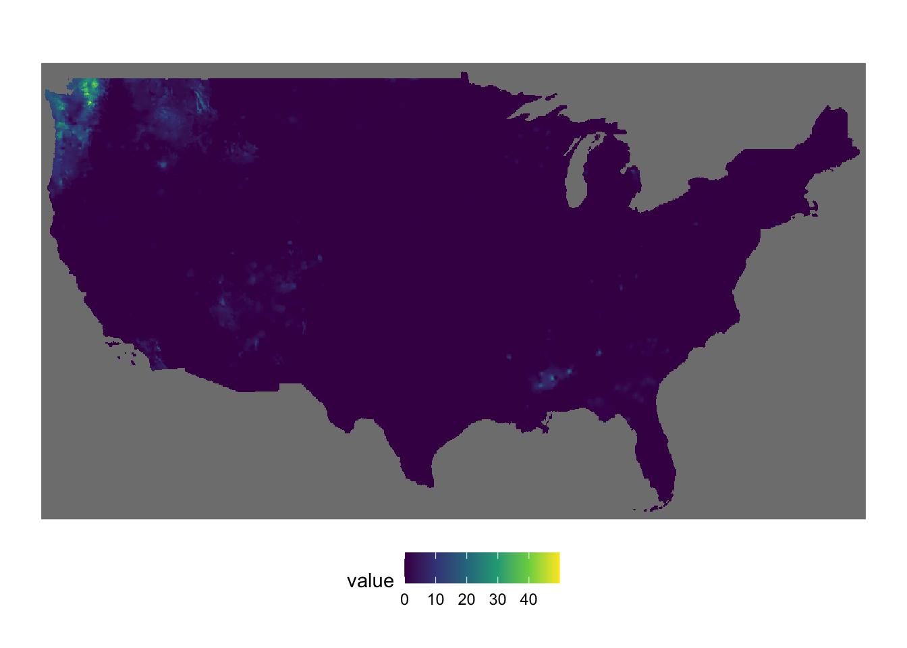
It is best to just look at examples to get the sense of how patchwork works. A fuller treatment of patchwork is found here.
Example 1
g_tmax + g_ppt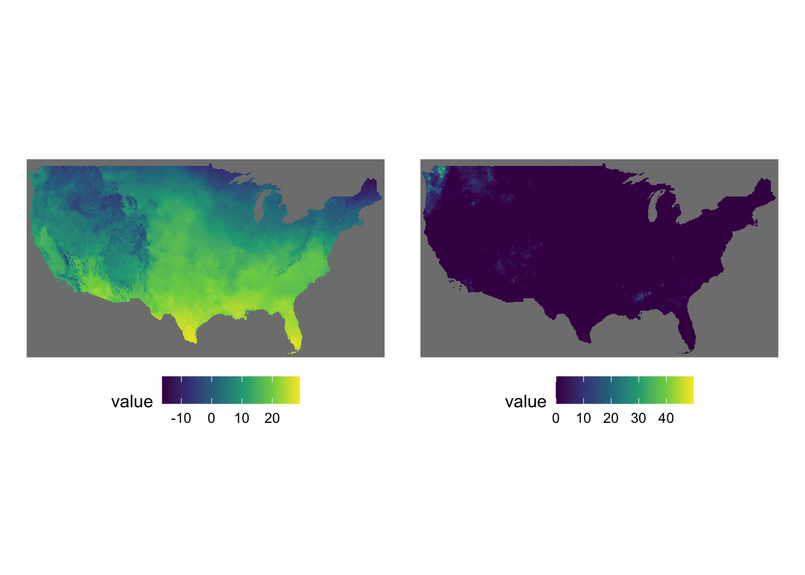
Example 2
g_tmax / g_ppt / g_tmax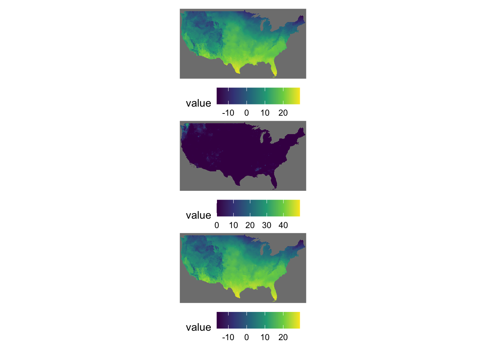
Example 3
g_tmax + g_ppt + plot_layout(nrow = 2)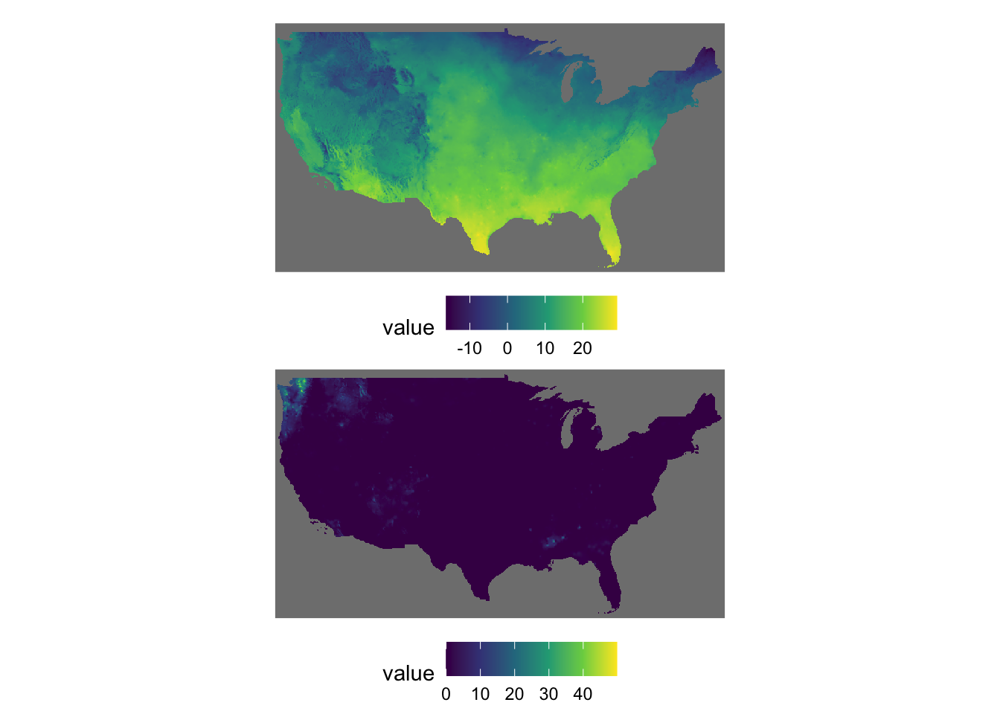
Example 4
g_tmax + g_ppt + g_tmax + g_ppt + plot_layout(nrow = 3, byrow = FALSE)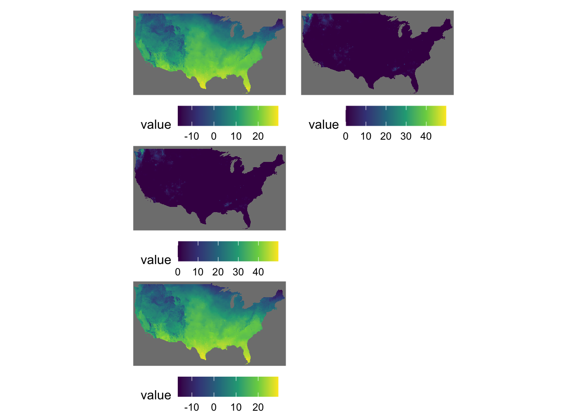
Example 5
g_tmax | (g_ppt / g_tmax)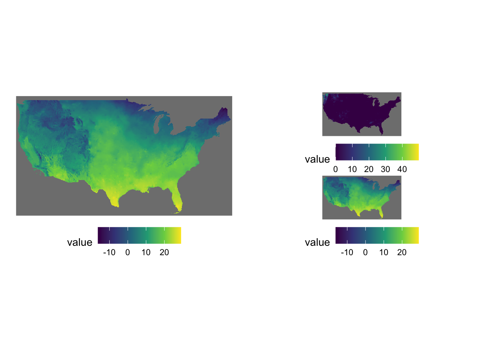
Sometimes figures are placed too close to each other. In such a case, you can pad a figure at the time of generating individual figures by adding the plot.margin option to theme(). For example, the following code creates space at the bottom of g_tmax (5 cm), and vertically stack g_tmax and g_ppt.
#--- space at the bottom ---#
g_tmax <-
g_tmax +
theme(plot.margin = unit(c(0, 0, 5, 0), "cm"))
#--- vertically stack ---#
g_tmax / g_ppt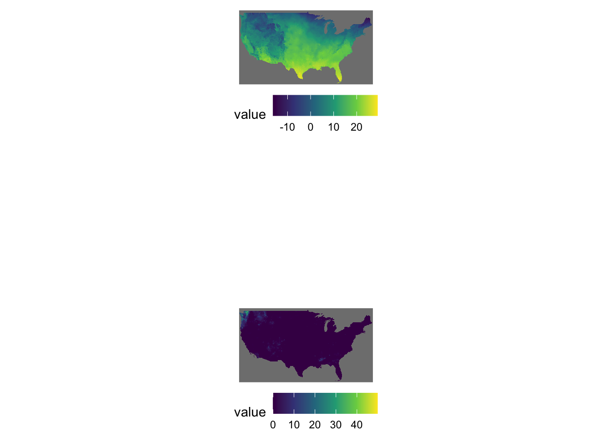
In plot.margin = unit(c(a, b, c, d), "cm"), here is which margin a, b, c, and d refers to.
-
a: top -
b: right -
c: bottom -
d: left
7.5 Inset Maps: Displaying a Map Within a Map
Sometimes, it is useful to present a map that covers a larger geographical range than the area of interest in the same map. This provides a better sense of the geographic extent and location of the area of interest relative to the larger geographic extent that the readers are more familiar with. For example, suppose your work is restricted to three counties in Kansas: Cheyenne, Sherman, and Wallace (Figure 7.2 presents their locations in Kansas)
Code
(
g_three_counties <-
ggplot() +
geom_sf(data = KS_county, fill = NA) +
geom_sf(data = three_counties, fill = "red", alpha = 0.3) +
geom_sf_text(data = three_counties, aes(label = NAME)) +
theme_void()
)
Simple feature collection with 3 features and 2 fields
Geometry type: MULTIPOLYGON
Dimension: XY
Bounding box: xmin: -102.0517 ymin: 38.69757 xmax: -101.3891 ymax: 40.00316
Geodetic CRS: NAD83
COUNTYFP NAME geometry
1 199 Wallace MULTIPOLYGON (((-102.0472 3...
2 181 Sherman MULTIPOLYGON (((-102.0498 3...
3 023 Cheyenne MULTIPOLYGON (((-102.0517 4...For those unfamiliar with Kansas, it can be helpful to show its location on the same map (or even where Kansas is within the U.S.).
7.5.1 Using the ggmapinset package
The goal here is to create a map like Figure 7.3.
Code
g_three_counties <-
ggplot() +
geom_sf(data = KS_county, fill = NA) +
geom_sf(data = three_counties, fill = "red", alpha = 0.3) +
theme_void()
(
g_three_counties +
geom_sf_inset(data = three_counties, map_base = "none") +
geom_sf_text_inset(data = three_counties, aes(label = NAME)) +
geom_inset_frame() +
coord_sf_inset(inset =
configure_inset(
#--- centroid of the three counties as the center ---#
centre = sf::st_centroid(sf::st_union(three_counties)),
#--- move 300 east and 250 south ---#
translation = c(-600, 0),
#--- radius of 80 km ---#
radius = 80,
#--- scale up by 2 ---#
scale = 6,
units = "km"
)
)
)
The first step of making an inset map using ggmapinset is to create the base map layer (Kansas county borders), a part of which is going to be expanded as an inset later.
As the base map, we will create a map of all the counties in Kansas with only the three counties (Perkins, Chase, and Dundy) colored red.
(
g_three_counties <-
ggplot() +
geom_sf(data = KS_county, fill = NA) +
geom_sf(data = three_counties, fill = "red", alpha = 0.3) +
theme_void()
)
We now configure the inset using configure_inset(). Below is the list of parameters to specify:
-
centre: The geographic coordinates of the small circle from which the enlargement begins. -
translation: The amount of shift in the x and y directions from the center to position the enlarged circle. -
radius: The radius of the original small circle. -
scale: The factor by which the circle is enlarged. -
units: The unit of measurement for the radius.
It is hard to get translation, radius, and scale right the first time. After some try and errors, you can get them right. In the code below, the center of the circle is set at the centroid of the three counties combined (sf::st_centroid(sf::st_union(three_counties)). translation = c(300, -250) along with units = "km" means that the inset map (map inside the circle in Figure 7.3) is 300km east and 250km south (-250 north) to the base map. The radius of the circle is specified to be 80km with radius = 80.
inset_config <-
configure_inset(
#--- centroid of the three counties as the center ---#
centre = sf::st_centroid(sf::st_union(three_counties)),
#--- move 300 east and 250 south ---#
translation = c(300, -250),
#--- radius of 80 km ---#
radius = 80,
#--- scale up by 2 ---#
scale = 2,
units = "km"
)With the inset configuration ready, we can now add the inset. For this, use the following functions:
-
geom_sf_inset()and/orgeom_sf_text_inset()to create the layers that will appear in the inset (the circle). -
geom_inset_frame()to add the frame, which includes the small circle, the large circle, and connecting lines. -
coord_sf_inset(inset = inset_config)to apply the configuration you set up earlier.
(
g_three_counties +
geom_sf_inset(data = three_counties, map_base = "none") +
geom_sf_text_inset(data = three_counties, aes(label = NAME)) +
geom_inset_frame() +
coord_sf_inset(inset = inset_config)
)
Well, this is not quite right. Let’s re-configure the inset parameters like below:
inset_config <-
configure_inset(
#--- centroid of the three counties as the center ---#
centre = sf::st_centroid(sf::st_union(three_counties)),
#--- move 300 east and 250 south ---#
translation = c(-600, 0),
#--- radius of 80 km ---#
radius = 80,
#--- scale up by 2 ---#
scale = 6,
units = "km"
)(
g_three_counties +
geom_sf_inset(data = three_counties, map_base = "none") +
geom_sf_text_inset(data = three_counties, aes(label = NAME)) +
geom_inset_frame() +
coord_sf_inset(inset = inset_config)
)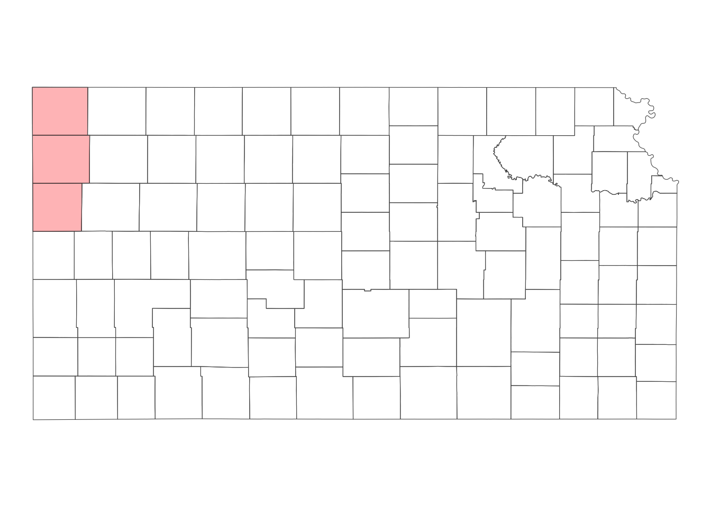
Here, scale is set to a higher number at 6 so that the inset map is much bigger relative to the base map. translation was also altered significantly so that the inset map does not overlap with the base map after scaling up the inset map.
7.5.2 Using ggplotGrob() and annotation_custom()
You can also use ggplotGrob() and annotation_custom() to create an inset map. The steps to achieve this are as follows:
- create a map of the area of interest and turn it into a
grobobject usingggplotGrob() - create a map of the region that includes the area of interest and turn it into a
grobobject usingggplotGrob() - combine the two using
annotation_custom()
#--- convert the ggplot into a grob ---#
grob_aoi <- ggplotGrob(g_three_counties)
#--- check the class ---#
class(grob_aoi)[1] "gtable" "gTree" "grob" "gDesc" #--- create a map of Kansas ---#
g_region <-
ggplot() +
geom_sf(data = KS_county) +
geom_sf(data = three_counties, fill = "blue", color = "red", alpha = 0.5) +
theme_void()
#--- convert to a grob ---#
grob_region <- ggplotGrob(g_region)Now that we have two maps, we can now put them on the same map using annotation_custom(). The first task is to initiate a ggplot with coord_equal() as follows:
You now have a blank canvas to put the images on. Let’s add a layer to the canvas using annotation_custom() in which you provide the grob object (a map) and specify the range of the canvas the map occupies. Since the extent of x and y are set to [0, 1] above with coord_equal(xlim = c(0, 1), ylim = c(0, 1), expand = FALSE), the following code put the grob_aoi to cover the entire y range and up to 0.8 of x from 0.
g_inset +
annotation_custom(grob_aoi,
xmin = 0, xmax = 0.8, ymin = 0,
ymax = 1
)
Similarly, we can add grob_region using annotation_custom(). Let’s put it at the right lower corner of the map.
g_inset +
annotation_custom(grob_aoi,
xmin = 0, xmax = 0.8, ymin = 0,
ymax = 1
) +
annotation_custom(grob_region,
xmin = 0.6, xmax = 1, ymin = 0,
ymax = 0.3
)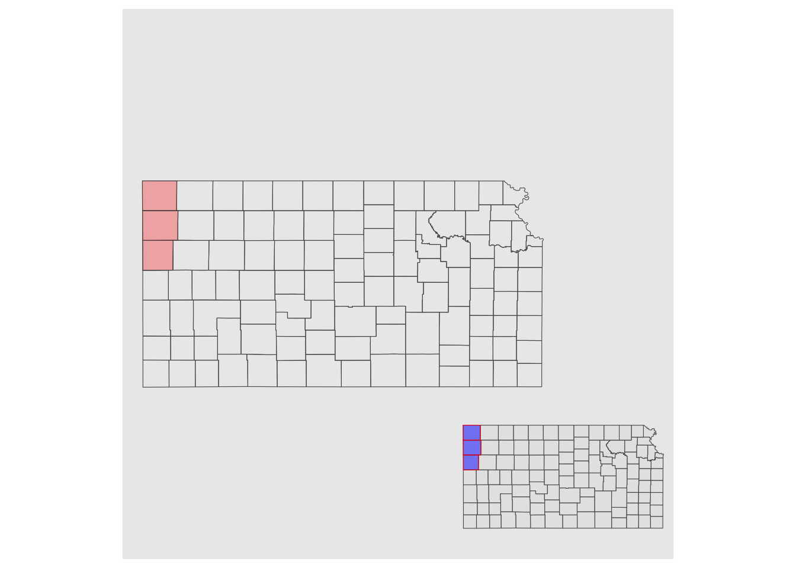
Note that the resulting map still has the default theme because it does not inherit the theme of maps added by annotation_custom(). So, you can add theme_void() to the map to make the border disappear.
g_inset +
annotation_custom(grob_aoi,
xmin = 0, xmax = 0.8, ymin = 0,
ymax = 1
) +
annotation_custom(grob_region,
xmin = 0.6, xmax = 1, ymin = 0,
ymax = 0.3
) +
theme_void()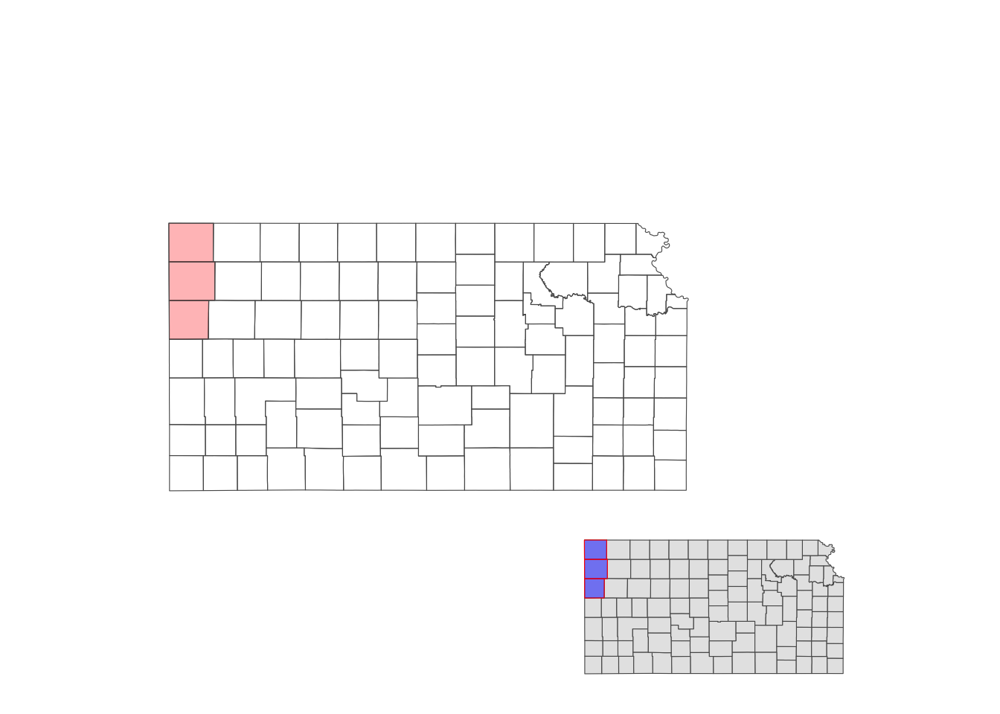
7.6 Fine-tuning maps for publication
This section offers several tips to enhance the appearance of your maps, making them suitable for publication in professional reports. Academic journals often have their own guidelines for figures, and reviewers or supervisors may have specific preferences for how maps should look. Regardless of the requirements, you will need to adapt your maps accordingly. It is worth noting that these techniques are not exclusive to maps—they apply to any type of figure. However, we will focus on specific components of a figure that are commonly modified when creating maps. In particular, we will cover how to use pre-made ggplot2 themes and how to adjust legends and facet strips.
(
gw_by_county <-
sf::st_join(KS_county, gw_KS_sf) %>%
data.table() %>%
.[, .(af_used = sum(af_used, na.rm = TRUE)), by = .(COUNTYFP, year)] %>%
left_join(KS_county, ., by = c("COUNTYFP")) %>%
filter(!is.na(year))
)Simple feature collection with 184 features and 4 fields
Geometry type: MULTIPOLYGON
Dimension: XY
Bounding box: xmin: -102.0517 ymin: 36.99302 xmax: -94.58841 ymax: 40.00316
Geodetic CRS: NAD83
First 10 features:
COUNTYFP NAME year af_used geometry
1 175 Seward 2010 163703.719 MULTIPOLYGON (((-101.0681 3...
2 175 Seward 2011 218863.983 MULTIPOLYGON (((-101.0681 3...
3 027 Clay 2010 5929.143 MULTIPOLYGON (((-97.3707 39...
4 027 Clay 2011 8358.903 MULTIPOLYGON (((-97.3707 39...
5 171 Scott 2010 42542.602 MULTIPOLYGON (((-101.1284 3...
6 171 Scott 2011 51620.454 MULTIPOLYGON (((-101.1284 3...
7 047 Edwards 2010 109726.389 MULTIPOLYGON (((-99.56988 3...
8 047 Edwards 2011 141487.791 MULTIPOLYGON (((-99.56988 3...
9 147 Phillips 2010 4657.746 MULTIPOLYGON (((-99.62821 3...
10 147 Phillips 2011 5076.198 MULTIPOLYGON (((-99.62821 3...(
g_base <- ggplot() +
geom_sf(data = gw_by_county, aes(fill = af_used)) +
facet_wrap(. ~ year)
)
7.6.1 Setting the theme
Right now, the map shows geographic coordinates, gray background, and grid lines. They are not very aesthetically appealing. Adding the pre-defined theme by theme_*() can alter the theme of a map very quickly. One of the themes suitable for maps is theme_void().
g_base + theme_void()
As you can see, all the axes information (axis.title, axis.ticks, axis.text,) and panel information (panel.background, panel.border, panel.grid) are gone among other parts of the figure. You can confirm this by evaluating theme_void().
theme_void()List of 136
$ line : list()
..- attr(*, "class")= chr [1:2] "element_blank" "element"
$ rect : list()
..- attr(*, "class")= chr [1:2] "element_blank" "element"
$ text :List of 11
..$ family : chr ""
..$ face : chr "plain"
..$ colour : chr "black"
..$ size : num 11
..$ hjust : num 0.5
..$ vjust : num 0.5
..$ angle : num 0
..$ lineheight : num 0.9
..$ margin : 'margin' num [1:4] 0points 0points 0points 0points
.. ..- attr(*, "unit")= int 8
..$ debug : logi FALSE
..$ inherit.blank: logi TRUE
..- attr(*, "class")= chr [1:2] "element_text" "element"
$ title : NULL
$ aspect.ratio : NULL
$ axis.title : list()
..- attr(*, "class")= chr [1:2] "element_blank" "element"
$ axis.title.x : NULL
$ axis.title.x.top : NULL
$ axis.title.x.bottom : NULL
$ axis.title.y : NULL
$ axis.title.y.left : NULL
$ axis.title.y.right : NULL
$ axis.text : list()
..- attr(*, "class")= chr [1:2] "element_blank" "element"
$ axis.text.x : NULL
$ axis.text.x.top : NULL
$ axis.text.x.bottom : NULL
$ axis.text.y : NULL
$ axis.text.y.left : NULL
$ axis.text.y.right : NULL
$ axis.text.theta : NULL
$ axis.text.r : NULL
$ axis.ticks : NULL
$ axis.ticks.x : NULL
$ axis.ticks.x.top : NULL
$ axis.ticks.x.bottom : NULL
$ axis.ticks.y : NULL
$ axis.ticks.y.left : NULL
$ axis.ticks.y.right : NULL
$ axis.ticks.theta : NULL
$ axis.ticks.r : NULL
$ axis.minor.ticks.x.top : NULL
$ axis.minor.ticks.x.bottom : NULL
$ axis.minor.ticks.y.left : NULL
$ axis.minor.ticks.y.right : NULL
$ axis.minor.ticks.theta : NULL
$ axis.minor.ticks.r : NULL
$ axis.ticks.length : 'simpleUnit' num 0points
..- attr(*, "unit")= int 8
$ axis.ticks.length.x : NULL
$ axis.ticks.length.x.top : NULL
$ axis.ticks.length.x.bottom : NULL
$ axis.ticks.length.y : NULL
$ axis.ticks.length.y.left : NULL
$ axis.ticks.length.y.right : NULL
$ axis.ticks.length.theta : NULL
$ axis.ticks.length.r : NULL
$ axis.minor.ticks.length : 'simpleUnit' num 0points
..- attr(*, "unit")= int 8
$ axis.minor.ticks.length.x : NULL
$ axis.minor.ticks.length.x.top : NULL
$ axis.minor.ticks.length.x.bottom: NULL
$ axis.minor.ticks.length.y : NULL
$ axis.minor.ticks.length.y.left : NULL
$ axis.minor.ticks.length.y.right : NULL
$ axis.minor.ticks.length.theta : NULL
$ axis.minor.ticks.length.r : NULL
$ axis.line : NULL
$ axis.line.x : NULL
$ axis.line.x.top : NULL
$ axis.line.x.bottom : NULL
$ axis.line.y : NULL
$ axis.line.y.left : NULL
$ axis.line.y.right : NULL
$ axis.line.theta : NULL
$ axis.line.r : NULL
$ legend.background : NULL
$ legend.margin : NULL
$ legend.spacing : NULL
$ legend.spacing.x : NULL
$ legend.spacing.y : NULL
$ legend.key : NULL
$ legend.key.size : 'simpleUnit' num 1.2lines
..- attr(*, "unit")= int 3
$ legend.key.height : NULL
$ legend.key.width : NULL
$ legend.key.spacing : 'simpleUnit' num 5.5points
..- attr(*, "unit")= int 8
$ legend.key.spacing.x : NULL
$ legend.key.spacing.y : NULL
$ legend.frame : NULL
$ legend.ticks : NULL
$ legend.ticks.length : 'rel' num 0.2
$ legend.axis.line : NULL
$ legend.text :List of 11
..$ family : NULL
..$ face : NULL
..$ colour : NULL
..$ size : 'rel' num 0.8
..$ hjust : NULL
..$ vjust : NULL
..$ angle : NULL
..$ lineheight : NULL
..$ margin : NULL
..$ debug : NULL
..$ inherit.blank: logi TRUE
..- attr(*, "class")= chr [1:2] "element_text" "element"
$ legend.text.position : NULL
$ legend.title :List of 11
..$ family : NULL
..$ face : NULL
..$ colour : NULL
..$ size : NULL
..$ hjust : num 0
..$ vjust : NULL
..$ angle : NULL
..$ lineheight : NULL
..$ margin : NULL
..$ debug : NULL
..$ inherit.blank: logi TRUE
..- attr(*, "class")= chr [1:2] "element_text" "element"
$ legend.title.position : NULL
$ legend.position : chr "right"
$ legend.position.inside : NULL
$ legend.direction : NULL
$ legend.byrow : NULL
$ legend.justification : NULL
$ legend.justification.top : NULL
$ legend.justification.bottom : NULL
$ legend.justification.left : NULL
$ legend.justification.right : NULL
$ legend.justification.inside : NULL
$ legend.location : NULL
$ legend.box : NULL
$ legend.box.just : NULL
$ legend.box.margin : NULL
$ legend.box.background : NULL
$ legend.box.spacing : NULL
[list output truncated]
- attr(*, "class")= chr [1:2] "theme" "gg"
- attr(*, "complete")= logi TRUE
- attr(*, "validate")= logi TRUEApplying the theme to a map obviates the need to suppress parts of a figure individually. You can suppress parts of the figure individually using theme(). For example, the following code gets rid of axis.text.
g_base + theme(axis.text = element_blank())
So, if theme_void() is overdoing things, you can build your own theme specifically for maps. For example, this is the theme I used for maps in Chapter 1.
theme_for_map <-
theme(
axis.ticks = element_blank(),
axis.text = element_blank(),
axis.line = element_blank(),
panel.border = element_blank(),
panel.grid = element_line(color = "transparent"),
panel.background = element_blank(),
plot.background = element_rect(fill = "transparent", color = "transparent")
)Applying the theme to the map:
g_base + theme_for_map
This is very similar to theme_void() except that strip.background is not lost.
You can use theme_void() as a starting point and override components of it like this.
#--- bring back a color to strip.background ---#
theme_for_map_2 <- theme_void() + theme(strip.background = element_rect(fill = "gray"))
#--- apply the new theme ---#
g_base + theme_for_map_2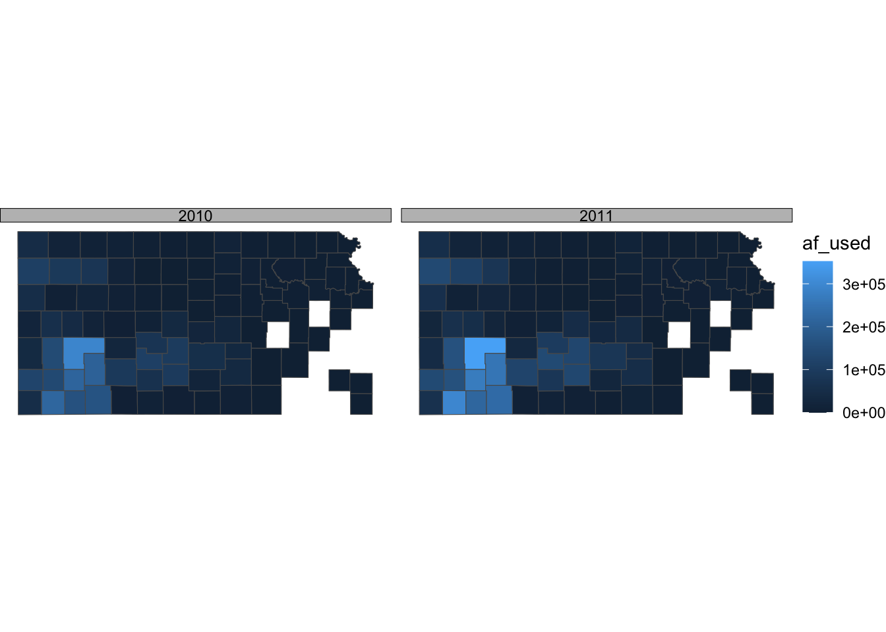
theme_bw() is also a good theme for maps.
ggplot() +
geom_sf(data = gw_by_county, aes(fill = af_used)) +
facet_grid(year ~ .) +
theme_bw()
If you do not like the gray grid lines, you can remove them like this.
ggplot() +
geom_sf(data = gw_by_county, aes(fill = af_used)) +
facet_grid(year ~ .) +
theme_bw() +
theme(
panel.grid = element_line(color = "transparent")
)
Not all themes are suitable for maps. For example, theme_classic() is not a very good option as you can see below:
g_base + theme_classic()
If you are not satisfied with theme_void() and not willing to make up your own theme, then you may want to take a look at other pre-made themes that are available from ggplot2 (see here) and ggthemes (see here). Note that some themes are more invasive than theme_void(), altering the default color scale.
7.6.2 Legend
Legends can be modified using legend.*() options for theme() and guide_*(). It is impossible to discuss every single one of all the options for these functions. So, this section focuses on the most common and useful (that I consider) modifications you can make to legends.
A legend consists of three elements: legend title, legend key (e.g., color bar), and legend label (or legend text). For example, in the figure below, af_used is the legend title, the color bar is the legend key, and the numbers below the color bar are legend labels. Knowing the name of these elements helps because the name of the options contains the name of the specific part of the legend.
(
g_legend <-
ggplot() +
geom_sf(data = gw_by_county, aes(fill = af_used)) +
facet_wrap(. ~ year) +
theme_void()
)
Let’s first change the color scale to Viridis using scale_fill_viridis_c() (see Section 7.3 for picking a color scale).
g_legend +
scale_fill_viridis_c()
Right now, the legend title is af_used, which does not tell the readers what it means. In general, you can change the title of a legend by using the name option inside the scale function for the legend (here, scale_fill_viridis_c()). So, this one works:
g_legend +
scale_fill_viridis_c(name = "Groundwater pumping (acre-feet)")
Alternatively, you can use labs() function.3. Since the legend is for the fill aesthetic attribute, you should add fill = "legend title" as follows:
3 labs() can also be used to specify the x- and y-axis titles.
g_legend +
scale_fill_viridis_c() +
labs(fill = "Groundwater pumping (acre-feet)")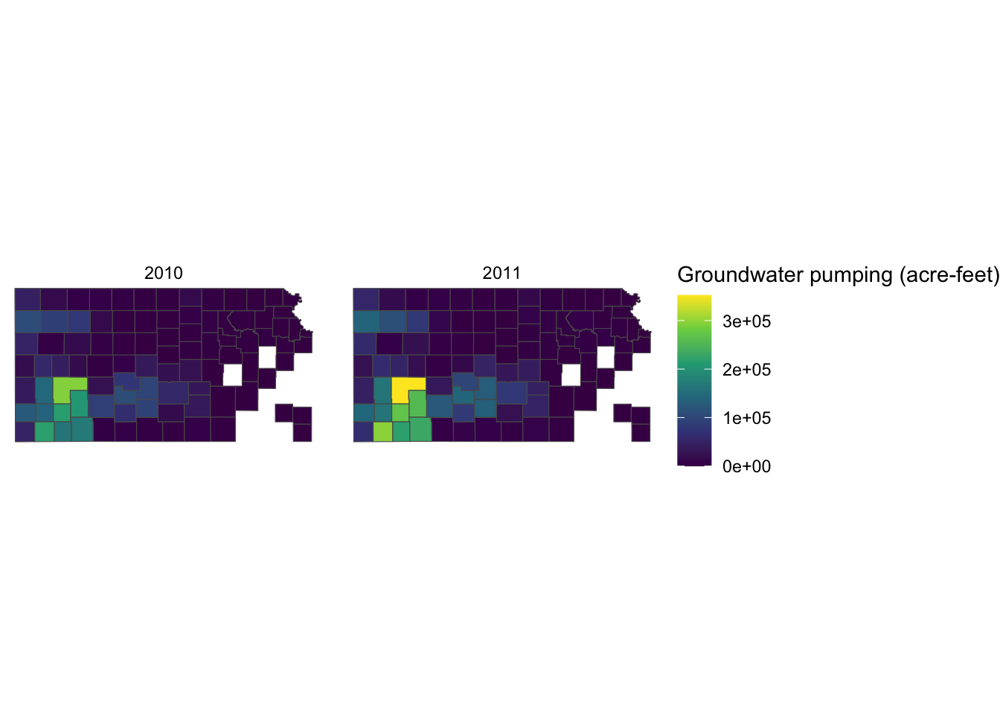
Since the legend title is long, the legend is taking up about the half of the space of the entire figure. So, let’s put the legend below the maps (bottom of the figure) by adding theme(legend.position = "bottom").
g_legend +
scale_fill_viridis_c() +
labs(fill = "Groundwater pumping (acre-feet)") +
theme(legend.position = "bottom")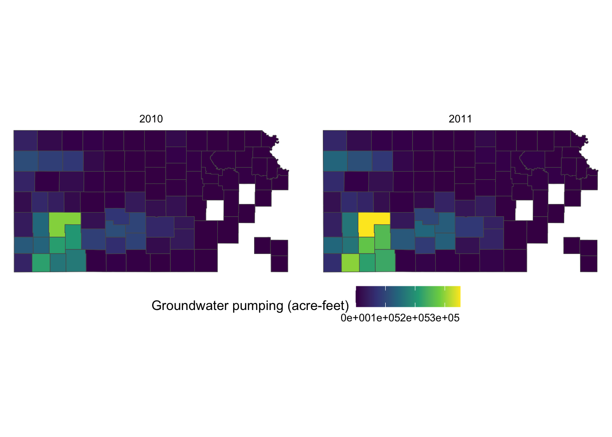
It would be aesthetically better to have the legend title on top of the color bar. This can be done by using the guides() function. Since we would like to alter the aesthetics of the legend for fill involving a color bar, we use fill = guide_colorbar(). To place the legend title on top, you add title.position="top" inside the guide_colorbar() function as follows:
g_legend +
scale_fill_viridis_c() +
labs(fill = "Groundwater pumping (acre-feet)") +
theme(legend.position = "bottom") +
guides(fill = guide_colorbar(title.position = "top"))
This looks better. But, the legend labels are too close to each other so it is hard to read them because the color bar is too short. Let’s elongate the color bar so that we have enough space between legend labels using legend.key.width = option for theme(). Let’s also make the legend thinner using legend.key.height = option.
g_legend +
scale_fill_viridis_c() +
labs(fill = "Groundwater pumping (acre-feet)") +
theme(
legend.position = "bottom",
#--- NEW LINES HERE!! ---#
legend.key.height = unit(0.5, "cm"),
legend.key.width = unit(2, "cm")
) +
guides(fill = guide_colorbar(title.position = "top"))
If the journal you are submitting an article to is requesting a specific font family for the texts in the figure, you can use legend.text = element_text() and legend.title = element_text() inside theme() for the legend labels and legend title, respectively. The following code uses the font family of “Times” and font size of 12 for both the labels and the title.
g_legend +
scale_fill_viridis_c() +
labs(fill = "Groundwater pumping (acre-feet)") +
theme(
legend.position = "bottom",
legend.key.height = unit(0.5, "cm"),
legend.key.width = unit(2, "cm"),
legend.text = element_text(size = 12, family = "Times"),
legend.title = element_text(size = 12, family = "Times")
#--- NEW LINES HERE!! ---#
) +
guides(fill = guide_colorbar(title.position = "top"))
For the other options to control the legend with a color bar, see here.
When the legend is made for discrete values, you can use guide_legend(). Let’s use the following map as a starting point.
#--- convert af_used to a discrete variable ---#
gw_Stevens <- dplyr::mutate(gw_Stevens, af_used_cat = cut_number(af_used, n = 5))(
g_legend_2 <-
ggplot(data = gw_Stevens) +
geom_sf(aes(color = af_used_cat), size = 2) +
scale_color_viridis(discrete = TRUE, option = "C") +
labs(color = "Groundwater pumping (acre-feet)") +
theme_void() +
theme(legend.position = "bottom")
)
The legend is too long, so first put the legend title on top of the legend labels using the code below:
g_legend_2 +
guides(
color = guide_legend(title.position = "top")
)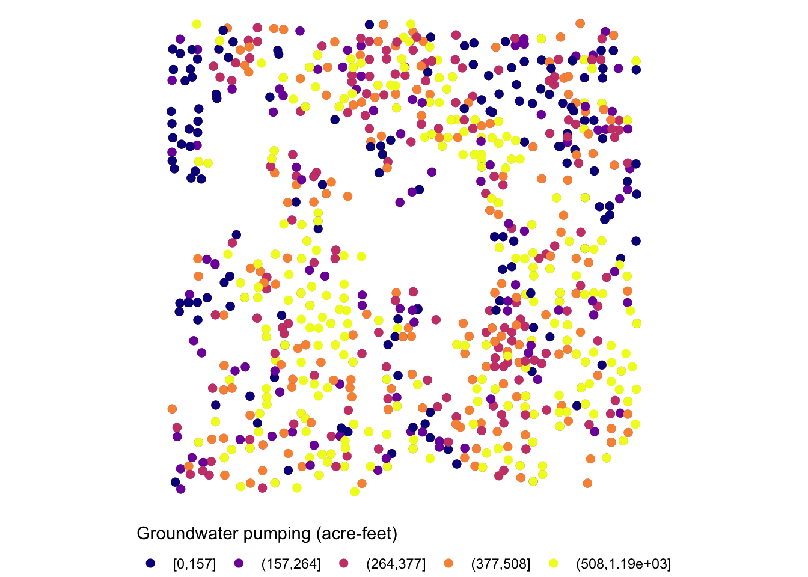
Since the legend is for the color aesthetic attribute, color = guide_legend() was used. The legend labels are still a bit too long, so let’s arrange them in two rows using the nrow = option.
g_legend_2 +
guides(
color = guide_legend(title.position = "top", nrow = 2)
)
For the other options for guide_legend(), see here.
7.6.3 Facet strips
Facet strips refer to the area of boxed where the values of faceting variables are printed. In the figure below, it’s gray strips on top of the maps. You can change how they look using strip.* options in theme() and also partially inside facet_wrap() and facet_grid(). Here is the list of available options:
-
strip.background,strip.background.x,strip.background.y strip.placement-
strip.text,strip.text.x,strip.text.y strip.switch.pad.gridstrip.switch.pad.wrap
ggplot() +
#--- KS county boundary ---#
geom_sf(data = sf::st_transform(KS_county, 32614)) +
#--- wells ---#
geom_sf(data = gw_KS_sf, aes(color = af_used)) +
#--- facet by year (side by side) ---#
facet_wrap((af_used > 500) ~ year) +
theme_void() +
scale_color_viridis_c() +
theme(legend.position = "bottom")
To make texts in the strips more descriptive of what they actually mean you can make variable that have texts you want to show on the map as their values.
(
g_facet <-
ggplot() +
#--- KS county boundary ---#
geom_sf(data = sf::st_transform(KS_county, 32614)) +
#--- wells ---#
geom_sf(data = gw_KS_sf, aes(color = af_used)) +
#--- facet by year (side by side) ---#
facet_wrap(high_low ~ year_txt) +
theme_void() +
scale_color_viridis_c() +
theme(legend.position = "bottom")
)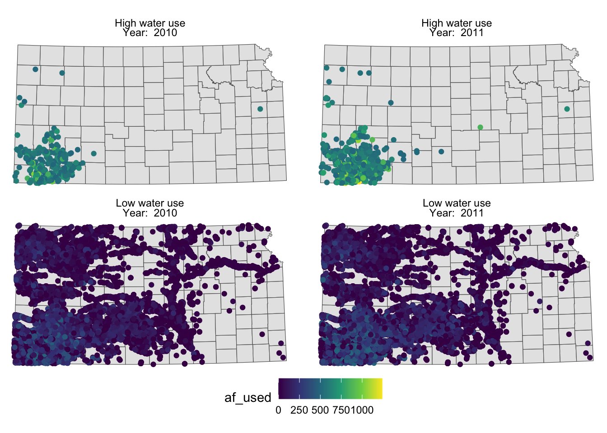
You probably noticed that the high water use cases are now appear on top. This is because the panels of figures are arranged in a way that the strip texts are alphabetically ordered. High water use precedes Low water use. Sometimes, this is not desirable. To force a specific order, you can turn the faceting variable (here high_low) into a factor with the order of its values defined using levels =. The following code converts high_low into a factor where “Low water use” is the first level and “High water use” is the second level.
Now, “Low water use” cases appear first (on top).
g_facet <-
ggplot() +
#--- KS county boundary ---#
geom_sf(data = sf::st_transform(KS_county, 32614)) +
#--- wells ---#
geom_sf(data = gw_KS_sf, aes(color = af_used)) +
#--- facet by year (side by side) ---#
facet_wrap(high_low ~ year_txt) +
theme_void() +
scale_color_viridis_c() +
theme(legend.position = "bottom")
g_facet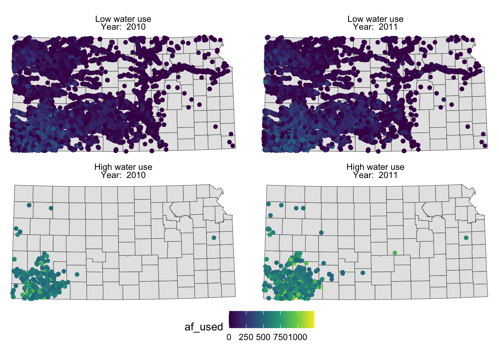
You can control how strip texts and strip boxes appear using strip.text and strip.background options. Here is an example:
g_facet +
theme(
strip.text.x = element_text(size = 12, family = "Times", color = "blue"),
strip.background = element_rect(fill = "red", color = "black")
)
Instead of having descriptions of cases on top of the figures, you could have one of the descriptions on the right side of the figures using facet_grid().
g_facet +
#--- this overrides facet_wrap(high_low ~ year_txt) ---#
facet_grid(high_low ~ year_txt)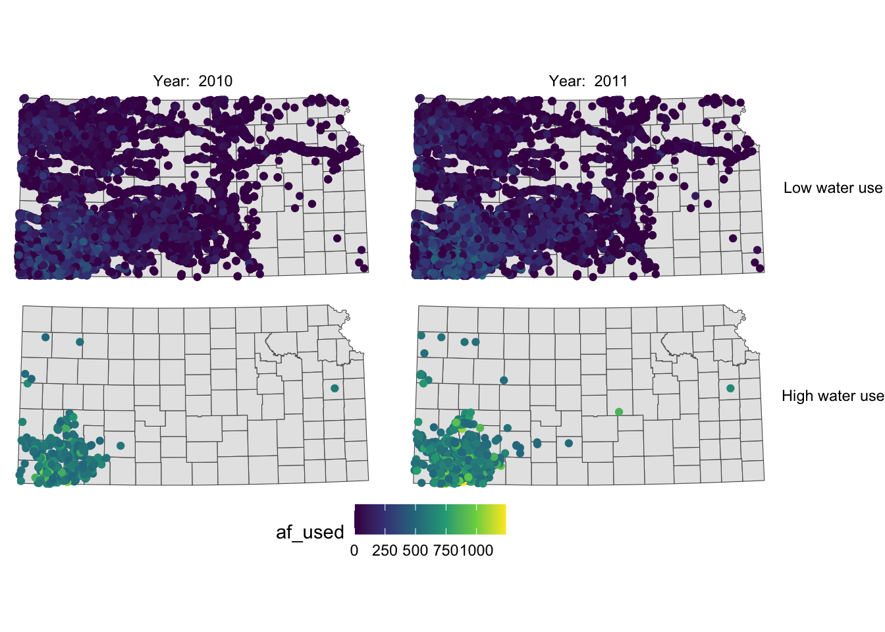
Now case descriptions for high_low are too long and it is squeezing the space for maps. Let’s flip high_low and year.
g_facet +
#--- this overrides facet_grid(high_low ~ year_txt) ---#
facet_grid(year_txt ~ high_low)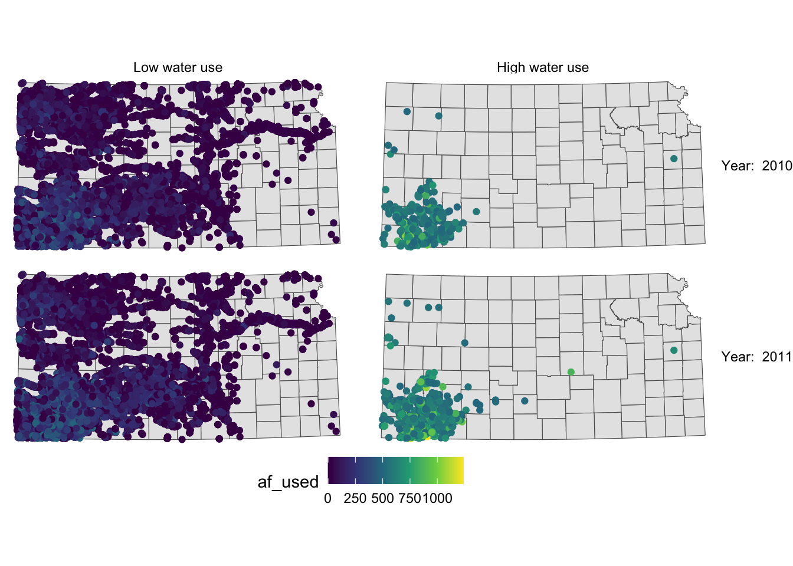
This is slightly better than before, but not much. Let’s rotate strip texts for year using the angle = option.
g_facet +
#--- this overrides facet_grid(high_low ~ year_txt) ---#
facet_grid(year_txt ~ high_low) +
theme(
strip.text.y = element_text(angle = -90)
)
Since we only want to change the angle of strip texts for the second faceting variable, we need to work on strip.text.y (if you want to work on the first one, you use strip.text.x.).
Let’s change the size of the strip texts to 12 and use Times font family.
g_facet +
#--- this overrides facet_grid(high_low ~ year_txt) ---#
facet_grid(year_txt ~ high_low) +
theme(
strip.text.y = element_text(angle = -90, size = 12, family = "Times"),
#--- moves up the strip texts ---#
strip.text.x = element_text(size = 12, family = "Times")
)
The strip texts for high_low are too close to maps that letter “g” in “High” is truncated. Let’s move them up.
g_facet +
#--- this overrides facet_grid(high_low ~ year_txt) ---#
facet_grid(year_txt ~ high_low) +
theme(
strip.text.y = element_text(angle = -90, size = 12, family = "Times"),
#--- moves up the strip texts ---#
strip.text.x = element_text(vjust = 2, size = 12, family = "Times")
)
Now the upper part of the letters is truncated. We could just put more margin below the texts using the margin = margin(top, right, bottom, left, unit in text) option.
g_facet +
#--- this overrides facet_grid(high_low ~ year_txt) ---#
facet_grid(year_txt ~ high_low) +
theme(
strip.text.y = element_text(angle = -90, size = 12, family = "Times"),
strip.text.x = element_text(margin = margin(0, 0, 0.2, 0, "cm"), size = 12, family = "Times")
)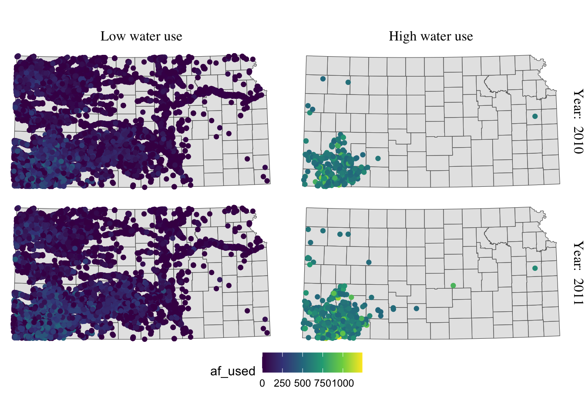
For completeness, let’s make the legend look better as well (this is discussed in Section 7.6.1).
g_facet +
#--- this overrides facet_grid(high_low ~ year_txt) ---#
facet_grid(year_txt ~ high_low) +
theme(
strip.text.y = element_text(angle = -90, size = 12, family = "Times"),
strip.text.x = element_text(margin = margin(0, 0, 0.2, 0, "cm"), size = 12, family = "Times")
) +
theme(legend.position = "bottom") +
labs(color = "Groundwater pumping (acre-feet)") +
theme(
legend.position = "bottom",
legend.key.height = unit(0.5, "cm"),
legend.key.width = unit(2, "cm"),
legend.text = element_text(size = 12, family = "Times"),
legend.title = element_text(size = 12, family = "Times")
#--- NEW LINES HERE!! ---#
) +
guides(color = guide_colorbar(title.position = "top"))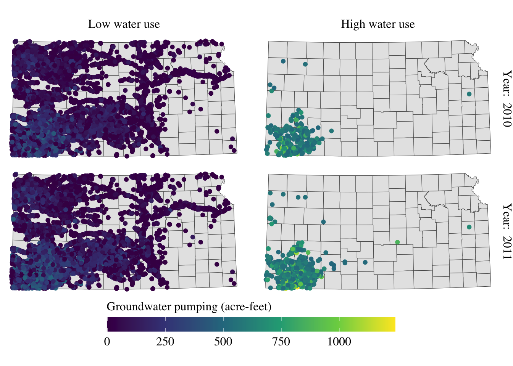
Alright, setting aside the problem of whether the information provided in the maps is meaningful or not, the maps look great at least.
7.6.4 North arrow and scale bar
The ggspatial package lets you put a north arrow and scale bar on a map using annotation_scale() and annotation_north_arrow().
#--- get North Carolina county borders ---#
nc <- st_read(system.file("shape/nc.shp", package = "sf"))Reading layer `nc' from data source
`/Library/Frameworks/R.framework/Versions/4.4-arm64/Resources/library/sf/shape/nc.shp'
using driver `ESRI Shapefile'
Simple feature collection with 100 features and 14 fields
Geometry type: MULTIPOLYGON
Dimension: XY
Bounding box: xmin: -84.32385 ymin: 33.88199 xmax: -75.45698 ymax: 36.58965
Geodetic CRS: NAD27(
#--- create a simple map ---#
g_nc <- ggplot(nc) +
geom_sf() +
theme_void()
)
Here is an example code that adds a scale bar:
#--- load ggspatial ---#
library(ggspatial)
#--- add scale bar ---#
g_nc +
annotation_scale(
location = "bl",
width_hint = 0.2
)location determines where the scale bar is. The first letter is either t (top) or b (bottom), and the second letter is either l (left) or r (right). width_hint is the length of the scale bar relative to the plot. The distance number (200 km) was generated automatically according to the length of the bar.
You can add pads from the plot border to fine tune the location of the scale bar:
g_nc +
annotation_scale(
location = "bl",
width_hint = 0.2,
pad_x = unit(3, "cm"),
pad_y = unit(2, "cm")
)
A positive number means that the scale bar will be placed further away from closest border of the plot.
You can add a north arrow using annotation_north_arrow(). Accepted arguments are similar to those for annotation_scale().
g_nc +
annotation_scale(
location = "bl",
width_hint = 0.2,
pad_x = unit(3, "cm")
) +
#--- add north arrow ---#
annotation_north_arrow(
location = "tl",
pad_x = unit(0.5, "in"),
pad_y = unit(0.1, "in"),
style = north_arrow_fancy_orienteering
)
There are several styles you can pick from. Run ?north_arrow_orienteering to see other options.
7.7 Saving a ggplot object as an image
Maps created with ggplot2 can be saved using ggsave() with the following syntax:
ggsave(filename = file name, plot = ggplot object)
#--- or just this ---#
ggsave(file name, ggplot object)Many different file formats are supported including pdf, svg, eps, png, jpg, tif, etc. One thing you want to keep in mind is the type of graphics:
- vector graphics (pdf, svg, eps)
- raster graphics (jpg, png, tif)
While vector graphics are scalable, raster graphics are not. If you enlarge raster graphics, the cells making up the figure become visible, making the figure unappealing. So, unless it is required to save figures as raster graphics, it is encouraged to save figures as vector graphics.
Let’s try to save the following ggplot object.
Code
#--- get North Carolina county borders ---#
nc <- st_read(system.file("shape/nc.shp", package = "sf"))Reading layer `nc' from data source
`/Library/Frameworks/R.framework/Versions/4.4-arm64/Resources/library/sf/shape/nc.shp'
using driver `ESRI Shapefile'
Simple feature collection with 100 features and 14 fields
Geometry type: MULTIPOLYGON
Dimension: XY
Bounding box: xmin: -84.32385 ymin: 33.88199 xmax: -75.45698 ymax: 36.58965
Geodetic CRS: NAD27
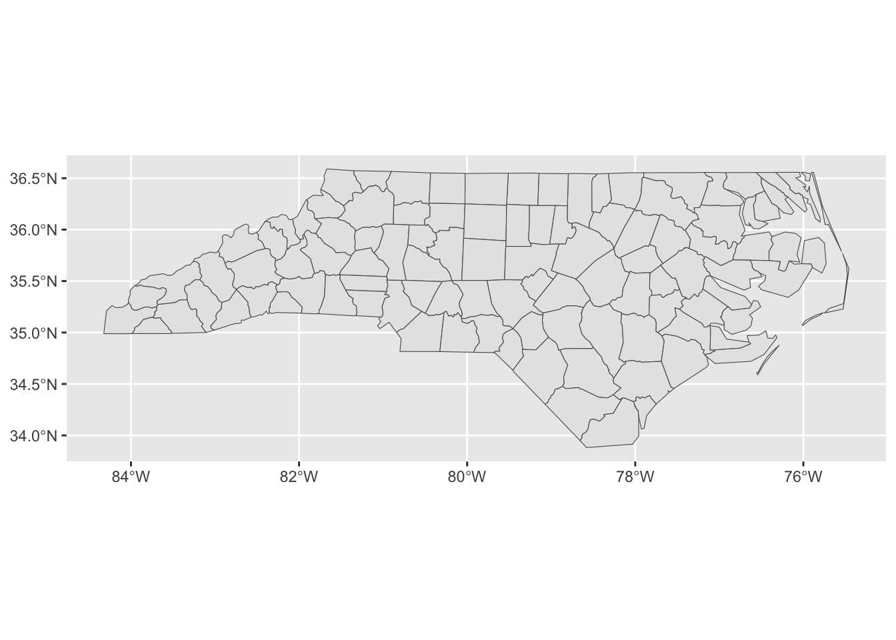
ggsave() automatically detects the file format from the file name. For example, the following code saves g_nc as nc.pdf. ggsave() knows the ggplot object was intended to be saved as a pdf file from the extension of the specified file name.
ggsave("nc.pdf", g_nc)Similarly,
#--- save as an eps file ---#
ggsave("nc.eps", g_nc)
#--- save as an eps file ---#
ggsave("nc.svg", g_nc)You can change the output size with height and width options. For example, the following code creates a pdf file of height = 5 inches and width = 7 inches.
ggsave("nc.pdf", g_nc, height = 5, width = 7)You change the unit with the units option. By default, in (inches) is used.
You can control the resolution of the output image by specifying DPI (dots per inch) using the dpi option. The default DPI value is 300, but you can specify any value suitable for the output image, including “retina” (320) or “screen” (72). 600 or higher is recommended when a high resolution output is required.
#--- dpi = 320 ---#
ggsave("nc_dpi_320.png", g_nc, height = 5, width = 7, dpi = 320)
#--- dpi = 72 ---#
ggsave("nc_dpi_screen.png", g_nc, height = 5, width = 7, dpi = "screen")